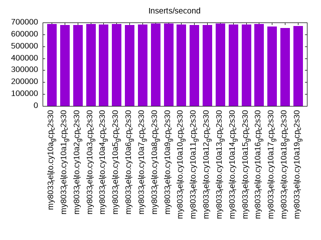
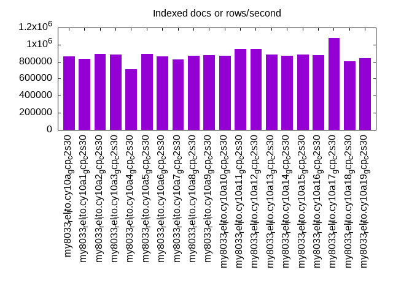
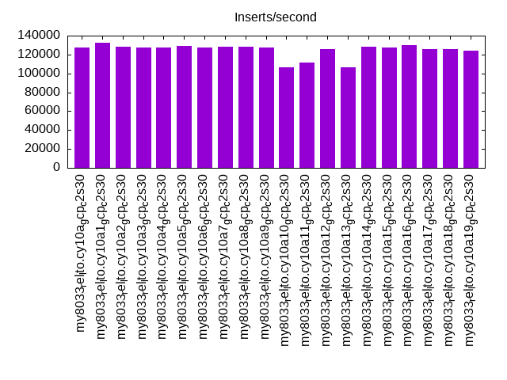
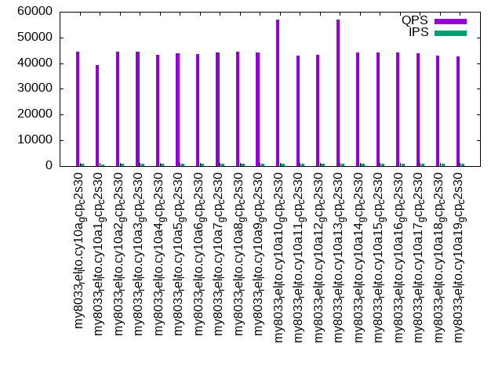
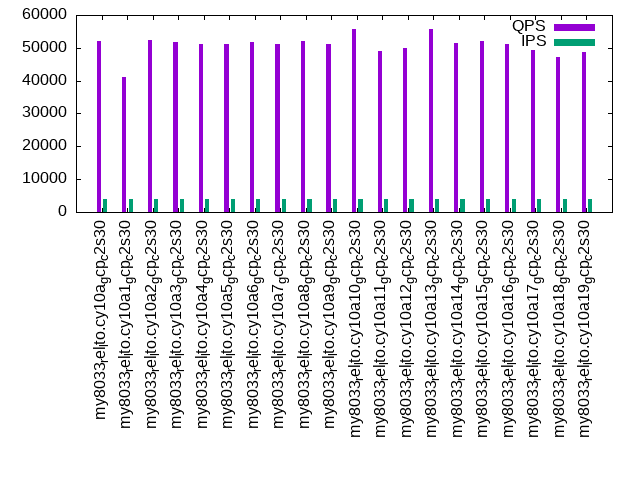
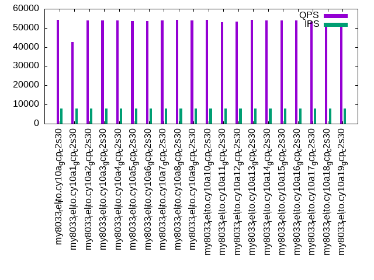

This is a report for the insert benchmark with 160M docs and 8 client(s). It is generated by scripts (bash, awk, sed) and Tufte might not be impressed. An overview of the insert benchmark is here and a short update is here. Below, by DBMS, I mean DBMS+version.config. An example is my8020.c10b40 where my means MySQL, 8020 is version 8.0.20 and c10b40 is the name for the configuration file.
The test server is a c2-standard-30 from GCP with 15 cores, hyperthreads disabled, 120G RAM, XFS + SW RAID 0 on 4 NVMe devices (1.5TB). The benchmark was run with 8 client and there were 1 or 3 connections per client (1 for queries or inserts without rate limits, 1+1 for rate limited inserts+deletes). There are 8 tables, client per table. It loads 160M rows without secondary indexes, creates secondary indexes, then inserts 800M rows with a delete per insert to avoid growing the table. It then does 3 read+write tests for 1800s each that do queries as fast as possible with 100, 500 and then 1000 inserts/second/client concurrent with the queries and 1000 deletes/second to avoid growing the table. The database is cached by InnoDB and the only IO is for writes.
The tested DBMS are:
The numbers are inserts/s for l.i0 and l.i1, indexed docs (or rows) /s for l.x and queries/s for q*.2. The values are the average rate over the entire test for inserts (IPS) and queries (QPS). The range of values for IPS and QPS is split into 3 parts: bottom 25%, middle 50%, top 25%. Values in the bottom 25% have a red background, values in the top 25% have a green background and values in the middle have no color. A gray background is used for values that can be ignored because the DBMS did not sustain the target insert rate. Red backgrounds are not used when the minimum value is within 80% of the max value.
| dbms | l.i0 | l.x | l.i1 | q100.1 | q500.1 | q1000.1 |
|---|---|---|---|---|---|---|
| my8033_rel_lto.cy10a_gcp_c2s30 | 686695 | 865405 | 127024 | 44591 | 51950 | 54333 |
| my8033_rel_lto.cy10a1_gcp_c2s30 | 677966 | 833854 | 132758 | 39366 | 41162 | 42746 |
| my8033_rel_lto.cy10a2_gcp_c2s30 | 677966 | 894413 | 128000 | 44434 | 52252 | 53941 |
| my8033_rel_lto.cy10a3_gcp_c2s30 | 686695 | 884530 | 127836 | 44334 | 51895 | 53815 |
| my8033_rel_lto.cy10a4_gcp_c2s30 | 683761 | 714732 | 127409 | 43135 | 51203 | 53901 |
| my8033_rel_lto.cy10a5_gcp_c2s30 | 686695 | 889444 | 128783 | 43985 | 51223 | 53561 |
| my8033_rel_lto.cy10a6_gcp_c2s30 | 680851 | 865405 | 127045 | 43513 | 51832 | 53753 |
| my8033_rel_lto.cy10a7_gcp_c2s30 | 683761 | 825258 | 128617 | 44195 | 51078 | 53777 |
| my8033_rel_lto.cy10a8_gcp_c2s30 | 689655 | 870109 | 128246 | 44428 | 52122 | 54281 |
| my8033_rel_lto.cy10a9_gcp_c2s30 | 689655 | 879670 | 127510 | 44108 | 51257 | 53956 |
| my8033_rel_lto.cy10a10_gcp_c2s30 | 683761 | 870109 | 106340 | 57000 | 55687 | 54073 |
| my8033_rel_lto.cy10a11_gcp_c2s30 | 680851 | 947337 | 111498 | 42885 | 49170 | 52953 |
| my8033_rel_lto.cy10a12_gcp_c2s30 | 680851 | 947337 | 125352 | 43299 | 50031 | 53436 |
| my8033_rel_lto.cy10a13_gcp_c2s30 | 689655 | 884530 | 106242 | 56989 | 55833 | 54267 |
| my8033_rel_lto.cy10a14_gcp_c2s30 | 683761 | 870109 | 128246 | 44072 | 51545 | 53896 |
| my8033_rel_lto.cy10a15_gcp_c2s30 | 683761 | 884530 | 127287 | 44167 | 52181 | 53945 |
| my8033_rel_lto.cy10a16_gcp_c2s30 | 686695 | 874863 | 129765 | 44244 | 51106 | 54015 |
| my8033_rel_lto.cy10a17_gcp_c2s30 | 666667 | 1074497 | 125925 | 43745 | 49436 | 53193 |
| my8033_rel_lto.cy10a18_gcp_c2s30 | 653061 | 804523 | 125964 | 42981 | 47202 | 52766 |
| my8033_rel_lto.cy10a19_gcp_c2s30 | 669456 | 838220 | 124243 | 42513 | 48772 | 52206 |
This table has relative throughput, throughput for the DBMS relative to the DBMS in the first line, using the absolute throughput from the previous table. Values less than 0.95 have a yellow background. Values greater than 1.05 have a blue background.
| dbms | l.i0 | l.x | l.i1 | q100.1 | q500.1 | q1000.1 |
|---|---|---|---|---|---|---|
| my8033_rel_lto.cy10a_gcp_c2s30 | 1.00 | 1.00 | 1.00 | 1.00 | 1.00 | 1.00 |
| my8033_rel_lto.cy10a1_gcp_c2s30 | 0.99 | 0.96 | 1.05 | 0.88 | 0.79 | 0.79 |
| my8033_rel_lto.cy10a2_gcp_c2s30 | 0.99 | 1.03 | 1.01 | 1.00 | 1.01 | 0.99 |
| my8033_rel_lto.cy10a3_gcp_c2s30 | 1.00 | 1.02 | 1.01 | 0.99 | 1.00 | 0.99 |
| my8033_rel_lto.cy10a4_gcp_c2s30 | 1.00 | 0.83 | 1.00 | 0.97 | 0.99 | 0.99 |
| my8033_rel_lto.cy10a5_gcp_c2s30 | 1.00 | 1.03 | 1.01 | 0.99 | 0.99 | 0.99 |
| my8033_rel_lto.cy10a6_gcp_c2s30 | 0.99 | 1.00 | 1.00 | 0.98 | 1.00 | 0.99 |
| my8033_rel_lto.cy10a7_gcp_c2s30 | 1.00 | 0.95 | 1.01 | 0.99 | 0.98 | 0.99 |
| my8033_rel_lto.cy10a8_gcp_c2s30 | 1.00 | 1.01 | 1.01 | 1.00 | 1.00 | 1.00 |
| my8033_rel_lto.cy10a9_gcp_c2s30 | 1.00 | 1.02 | 1.00 | 0.99 | 0.99 | 0.99 |
| my8033_rel_lto.cy10a10_gcp_c2s30 | 1.00 | 1.01 | 0.84 | 1.28 | 1.07 | 1.00 |
| my8033_rel_lto.cy10a11_gcp_c2s30 | 0.99 | 1.09 | 0.88 | 0.96 | 0.95 | 0.97 |
| my8033_rel_lto.cy10a12_gcp_c2s30 | 0.99 | 1.09 | 0.99 | 0.97 | 0.96 | 0.98 |
| my8033_rel_lto.cy10a13_gcp_c2s30 | 1.00 | 1.02 | 0.84 | 1.28 | 1.07 | 1.00 |
| my8033_rel_lto.cy10a14_gcp_c2s30 | 1.00 | 1.01 | 1.01 | 0.99 | 0.99 | 0.99 |
| my8033_rel_lto.cy10a15_gcp_c2s30 | 1.00 | 1.02 | 1.00 | 0.99 | 1.00 | 0.99 |
| my8033_rel_lto.cy10a16_gcp_c2s30 | 1.00 | 1.01 | 1.02 | 0.99 | 0.98 | 0.99 |
| my8033_rel_lto.cy10a17_gcp_c2s30 | 0.97 | 1.24 | 0.99 | 0.98 | 0.95 | 0.98 |
| my8033_rel_lto.cy10a18_gcp_c2s30 | 0.95 | 0.93 | 0.99 | 0.96 | 0.91 | 0.97 |
| my8033_rel_lto.cy10a19_gcp_c2s30 | 0.97 | 0.97 | 0.98 | 0.95 | 0.94 | 0.96 |
This lists the average rate of inserts/s for the tests that do inserts concurrent with queries. For such tests the query rate is listed in the table above. The read+write tests are setup so that the insert rate should match the target rate every second. Cells that are not at least 95% of the target have a red background to indicate a failure to satisfy the target.
| dbms | q100.1 | q500.1 | q1000.1 |
|---|---|---|---|
| my8033_rel_lto.cy10a_gcp_c2s30 | 794 | 3980 | 7960 |
| my8033_rel_lto.cy10a1_gcp_c2s30 | 757 | 3869 | 7886 |
| my8033_rel_lto.cy10a2_gcp_c2s30 | 794 | 3978 | 7960 |
| my8033_rel_lto.cy10a3_gcp_c2s30 | 794 | 3978 | 7960 |
| my8033_rel_lto.cy10a4_gcp_c2s30 | 793 | 3980 | 7960 |
| my8033_rel_lto.cy10a5_gcp_c2s30 | 794 | 3980 | 7960 |
| my8033_rel_lto.cy10a6_gcp_c2s30 | 794 | 3980 | 7960 |
| my8033_rel_lto.cy10a7_gcp_c2s30 | 794 | 3978 | 7960 |
| my8033_rel_lto.cy10a8_gcp_c2s30 | 794 | 3978 | 7960 |
| my8033_rel_lto.cy10a9_gcp_c2s30 | 794 | 3980 | 7960 |
| my8033_rel_lto.cy10a10_gcp_c2s30 | 796 | 3978 | 7960 |
| my8033_rel_lto.cy10a11_gcp_c2s30 | 793 | 3978 | 7960 |
| my8033_rel_lto.cy10a12_gcp_c2s30 | 794 | 3978 | 7960 |
| my8033_rel_lto.cy10a13_gcp_c2s30 | 796 | 3980 | 7965 |
| my8033_rel_lto.cy10a14_gcp_c2s30 | 794 | 3980 | 7960 |
| my8033_rel_lto.cy10a15_gcp_c2s30 | 794 | 3980 | 7960 |
| my8033_rel_lto.cy10a16_gcp_c2s30 | 793 | 3978 | 7960 |
| my8033_rel_lto.cy10a17_gcp_c2s30 | 794 | 3980 | 7960 |
| my8033_rel_lto.cy10a18_gcp_c2s30 | 794 | 3978 | 7960 |
| my8033_rel_lto.cy10a19_gcp_c2s30 | 793 | 3978 | 7960 |
| target | 800 | 4000 | 8000 |
l.i0: load without secondary indexes. Graphs for performance per 1-second interval are here.
Average throughput:
Insert response time histogram: each cell has the percentage of responses that take <= the time in the header and max is the max response time in seconds. For the max column values in the top 25% of the range have a red background and in the bottom 25% of the range have a green background. The red background is not used when the min value is within 80% of the max value.
| dbms | 256us | 1ms | 4ms | 16ms | 64ms | 256ms | 1s | 4s | 16s | gt | max |
|---|---|---|---|---|---|---|---|---|---|---|---|
| my8033_rel_lto.cy10a_gcp_c2s30 | 30.288 | 69.638 | 0.033 | 0.026 | 0.014 | 0.253 | |||||
| my8033_rel_lto.cy10a1_gcp_c2s30 | 25.965 | 73.960 | 0.034 | 0.027 | 0.014 | 0.219 | |||||
| my8033_rel_lto.cy10a2_gcp_c2s30 | 25.070 | 74.844 | 0.041 | 0.030 | 0.014 | 0.001 | 0.517 | ||||
| my8033_rel_lto.cy10a3_gcp_c2s30 | 30.506 | 69.416 | 0.039 | 0.024 | 0.014 | nonzero | 0.265 | ||||
| my8033_rel_lto.cy10a4_gcp_c2s30 | 32.872 | 66.896 | 0.194 | 0.024 | 0.014 | 0.215 | |||||
| my8033_rel_lto.cy10a5_gcp_c2s30 | 31.689 | 68.234 | 0.036 | 0.026 | 0.014 | nonzero | 0.257 | ||||
| my8033_rel_lto.cy10a6_gcp_c2s30 | 24.990 | 74.928 | 0.042 | 0.026 | 0.014 | 0.237 | |||||
| my8033_rel_lto.cy10a7_gcp_c2s30 | 26.523 | 73.396 | 0.040 | 0.028 | 0.014 | 0.240 | |||||
| my8033_rel_lto.cy10a8_gcp_c2s30 | 33.529 | 66.398 | 0.036 | 0.023 | 0.014 | 0.223 | |||||
| my8033_rel_lto.cy10a9_gcp_c2s30 | 36.052 | 63.878 | 0.029 | 0.026 | 0.014 | 0.234 | |||||
| my8033_rel_lto.cy10a10_gcp_c2s30 | 28.234 | 71.655 | 0.064 | 0.032 | 0.014 | 0.001 | 0.364 | ||||
| my8033_rel_lto.cy10a11_gcp_c2s30 | 27.288 | 72.613 | 0.046 | 0.038 | 0.013 | 0.001 | 0.269 | ||||
| my8033_rel_lto.cy10a12_gcp_c2s30 | 25.790 | 74.123 | 0.042 | 0.030 | 0.014 | 0.236 | |||||
| my8033_rel_lto.cy10a13_gcp_c2s30 | 34.067 | 65.866 | 0.030 | 0.022 | 0.014 | 0.240 | |||||
| my8033_rel_lto.cy10a14_gcp_c2s30 | 33.714 | 66.212 | 0.037 | 0.023 | 0.014 | 0.224 | |||||
| my8033_rel_lto.cy10a15_gcp_c2s30 | 25.481 | 74.448 | 0.032 | 0.025 | 0.014 | 0.241 | |||||
| my8033_rel_lto.cy10a16_gcp_c2s30 | 29.421 | 70.504 | 0.037 | 0.023 | 0.014 | 0.228 | |||||
| my8033_rel_lto.cy10a17_gcp_c2s30 | 14.793 | 85.132 | 0.037 | 0.023 | 0.013 | 0.002 | nonzero | 1.569 | |||
| my8033_rel_lto.cy10a18_gcp_c2s30 | 6.894 | 93.027 | 0.034 | 0.030 | 0.012 | 0.002 | 0.299 | ||||
| my8033_rel_lto.cy10a19_gcp_c2s30 | 14.097 | 85.818 | 0.042 | 0.029 | 0.012 | 0.002 | 0.309 |
Performance metrics for the DBMS listed above. Some are normalized by throughput, others are not. Legend for results is here.
ips qps rps rmbps wps wmbps rpq rkbpq wpi wkbpi csps cpups cspq cpupq dbgb1 dbgb2 rss maxop p50 p99 tag 686695 0 0 0.0 1130.5 127.5 0.000 0.000 0.002 0.190 175781 72.6 0.256 16 10.6 139.1 17.3 0.253 93499 70524 160m.my8033_rel_lto.cy10a_gcp_c2s30 677966 0 0 0.0 1125.2 131.0 0.000 0.000 0.002 0.198 153298 72.5 0.226 16 10.6 139.1 17.3 0.219 92139 71723 160m.my8033_rel_lto.cy10a1_gcp_c2s30 677966 0 0 0.0 1342.9 135.0 0.000 0.000 0.002 0.204 159622 72.0 0.235 16 10.6 139.1 17.3 0.517 92699 44570 160m.my8033_rel_lto.cy10a2_gcp_c2s30 686695 0 0 0.0 1336.1 134.2 0.000 0.000 0.002 0.200 183684 72.8 0.267 16 10.6 139.1 17.3 0.265 93299 70724 160m.my8033_rel_lto.cy10a3_gcp_c2s30 683761 0 0 0.0 631.9 130.6 0.000 0.000 0.001 0.196 180646 72.8 0.264 16 10.6 139.1 17.3 0.215 93300 74021 160m.my8033_rel_lto.cy10a4_gcp_c2s30 686695 0 0 0.0 1130.5 133.0 0.000 0.000 0.002 0.198 181886 72.6 0.265 16 10.6 139.1 17.3 0.257 93699 69526 160m.my8033_rel_lto.cy10a5_gcp_c2s30 680851 0 0 0.0 1133.8 126.5 0.000 0.000 0.002 0.190 155793 72.2 0.229 16 10.6 139.1 17.3 0.237 93030 74044 160m.my8033_rel_lto.cy10a6_gcp_c2s30 683761 0 0 0.0 1123.9 128.5 0.000 0.000 0.002 0.192 169235 72.7 0.248 16 10.6 139.1 17.3 0.240 93099 72422 160m.my8033_rel_lto.cy10a7_gcp_c2s30 689655 0 0 0.0 1136.7 129.5 0.000 0.000 0.002 0.192 178307 72.7 0.259 16 10.6 139.1 17.3 0.223 93729 72746 160m.my8033_rel_lto.cy10a8_gcp_c2s30 689655 0 0 0.0 1137.7 131.2 0.000 0.000 0.002 0.195 193481 72.6 0.281 16 10.6 139.1 17.3 0.234 94298 72722 160m.my8033_rel_lto.cy10a9_gcp_c2s30 683761 0 0 0.0 1120.4 130.9 0.000 0.000 0.002 0.196 149582 72.7 0.219 16 10.6 139.1 17.3 0.364 92601 58237 160m.my8033_rel_lto.cy10a10_gcp_c2s30 680851 0 0 0.0 3229.3 186.6 0.000 0.000 0.005 0.281 179510 72.4 0.264 16 10.6 27.1 17.3 0.269 92633 68626 160m.my8033_rel_lto.cy10a11_gcp_c2s30 680851 0 0 0.0 2659.8 169.6 0.000 0.000 0.004 0.255 171354 72.2 0.252 16 10.6 43.1 17.3 0.236 92740 72122 160m.my8033_rel_lto.cy10a12_gcp_c2s30 689655 0 0 0.0 1133.3 129.5 0.000 0.000 0.002 0.192 192515 72.6 0.279 16 10.6 139.1 17.3 0.240 93898 73022 160m.my8033_rel_lto.cy10a13_gcp_c2s30 683761 0 0 0.0 1133.6 132.6 0.000 0.000 0.002 0.199 172899 72.7 0.253 16 10.6 139.1 17.3 0.224 93699 73321 160m.my8033_rel_lto.cy10a14_gcp_c2s30 683761 0 0 0.0 1122.8 127.6 0.000 0.000 0.002 0.191 172875 72.8 0.253 16 10.6 139.1 17.3 0.241 93130 72823 160m.my8033_rel_lto.cy10a15_gcp_c2s30 686695 0 0 0.0 937.6 124.6 0.000 0.000 0.001 0.186 171372 72.6 0.250 16 10.6 139.1 17.3 0.228 93299 71822 160m.my8033_rel_lto.cy10a16_gcp_c2s30 666667 0 0 0.0 1017.3 118.8 0.000 0.000 0.002 0.182 223028 72.8 0.335 16 10.6 139.1 17.3 1.569 92001 66228 160m.my8033_rel_lto.cy10a17_gcp_c2s30 653061 0 0 0.0 1242.1 128.1 0.000 0.000 0.002 0.201 203160 72.9 0.311 17 10.6 139.1 17.3 0.299 89704 66129 160m.my8033_rel_lto.cy10a18_gcp_c2s30 669456 0 0 0.0 1104.4 125.3 0.000 0.000 0.002 0.192 222032 72.9 0.332 16 10.6 139.1 17.3 0.309 91628 64031 160m.my8033_rel_lto.cy10a19_gcp_c2s30
l.x: create secondary indexes.
Average throughput:
Performance metrics for the DBMS listed above. Some are normalized by throughput, others are not. Legend for results is here.
ips qps rps rmbps wps wmbps rpq rkbpq wpi wkbpi csps cpups cspq cpupq dbgb1 dbgb2 rss maxop p50 p99 tag 865405 0 4333 275.4 17602.6 842.7 0.005 0.326 0.020 0.997 123381 81.7 0.143 14 23.5 152.1 27.0 0.015 NA NA 160m.my8033_rel_lto.cy10a_gcp_c2s30 833854 0 4216 268.1 17032.3 821.2 0.005 0.329 0.020 1.009 96021 80.9 0.115 15 23.5 152.1 25.6 0.003 NA NA 160m.my8033_rel_lto.cy10a1_gcp_c2s30 894413 0 4576 290.9 18559.1 893.9 0.005 0.333 0.021 1.023 82198 79.2 0.092 13 23.5 152.1 24.8 0.004 NA NA 160m.my8033_rel_lto.cy10a2_gcp_c2s30 884530 0 4453 282.9 18327.2 875.1 0.005 0.328 0.021 1.013 87602 79.0 0.099 13 23.5 152.1 26.1 0.006 NA NA 160m.my8033_rel_lto.cy10a3_gcp_c2s30 714732 0 3635 231.4 14846.8 705.7 0.005 0.331 0.021 1.011 164172 77.6 0.230 16 23.5 152.1 26.8 0.014 NA NA 160m.my8033_rel_lto.cy10a4_gcp_c2s30 889444 0 4455 283.0 18137.5 868.2 0.005 0.326 0.020 1.000 76513 75.8 0.086 13 23.5 152.1 23.8 0.016 NA NA 160m.my8033_rel_lto.cy10a5_gcp_c2s30 865405 0 4333 275.3 17664.2 844.8 0.005 0.326 0.020 1.000 85764 78.1 0.099 14 23.5 152.1 25.0 0.017 NA NA 160m.my8033_rel_lto.cy10a6_gcp_c2s30 825258 0 4216 268.1 16885.1 817.9 0.005 0.333 0.020 1.015 116408 80.7 0.141 15 23.5 152.1 27.1 0.004 NA NA 160m.my8033_rel_lto.cy10a7_gcp_c2s30 870109 0 4450 282.9 17801.1 862.6 0.005 0.333 0.020 1.015 96924 79.2 0.111 14 23.5 152.1 26.2 0.014 NA NA 160m.my8033_rel_lto.cy10a8_gcp_c2s30 879670 0 4452 282.9 18096.5 868.8 0.005 0.329 0.021 1.011 86260 79.0 0.098 13 23.5 152.1 25.7 0.004 NA NA 160m.my8033_rel_lto.cy10a9_gcp_c2s30 870109 0 4336 275.4 17665.4 844.9 0.005 0.324 0.020 0.994 103963 80.0 0.119 14 23.5 152.1 26.0 0.004 NA NA 160m.my8033_rel_lto.cy10a10_gcp_c2s30 947337 0 4856 308.7 19471.9 942.6 0.005 0.334 0.021 1.019 53932 72.5 0.057 11 23.5 40.1 26.6 0.030 NA NA 160m.my8033_rel_lto.cy10a11_gcp_c2s30 947337 0 4856 308.7 19597.2 947.8 0.005 0.334 0.021 1.024 62420 74.9 0.066 12 23.5 56.1 26.1 0.003 NA NA 160m.my8033_rel_lto.cy10a12_gcp_c2s30 884530 0 4453 283.0 18111.9 868.3 0.005 0.328 0.020 1.005 83278 78.9 0.094 13 23.5 152.1 24.8 0.004 NA NA 160m.my8033_rel_lto.cy10a13_gcp_c2s30 870109 0 4452 282.9 17887.2 863.9 0.005 0.333 0.021 1.017 90599 80.8 0.104 14 23.5 152.1 26.2 0.003 NA NA 160m.my8033_rel_lto.cy10a14_gcp_c2s30 884530 0 4454 282.9 19500.9 906.6 0.005 0.328 0.022 1.050 93163 79.3 0.105 13 23.5 152.1 25.9 0.003 NA NA 160m.my8033_rel_lto.cy10a15_gcp_c2s30 874863 0 4452 282.9 17772.9 860.6 0.005 0.331 0.020 1.007 97885 80.5 0.112 14 23.5 152.1 26.0 0.004 NA NA 160m.my8033_rel_lto.cy10a16_gcp_c2s30 1074497 0 5516 351.1 16825.9 981.7 0.005 0.335 0.016 0.936 55322 78.5 0.051 11 23.5 152.1 28.5 0.004 NA NA 160m.my8033_rel_lto.cy10a17_gcp_c2s30 804523 0 4109 261.1 16485.0 797.1 0.005 0.332 0.020 1.015 134531 78.6 0.167 15 23.5 152.1 26.1 0.003 NA NA 160m.my8033_rel_lto.cy10a18_gcp_c2s30 838220 0 4215 268.1 17126.4 821.9 0.005 0.327 0.020 1.004 135677 79.3 0.162 14 23.5 152.1 27.4 0.004 NA NA 160m.my8033_rel_lto.cy10a19_gcp_c2s30
l.i1: continue load after secondary indexes created. Graphs for performance per 1-second interval are here.
Average throughput:
Insert response time histogram: each cell has the percentage of responses that take <= the time in the header and max is the max response time in seconds. For the max column values in the top 25% of the range have a red background and in the bottom 25% of the range have a green background. The red background is not used when the min value is within 80% of the max value.
| dbms | 256us | 1ms | 4ms | 16ms | 64ms | 256ms | 1s | 4s | 16s | gt | max |
|---|---|---|---|---|---|---|---|---|---|---|---|
| my8033_rel_lto.cy10a_gcp_c2s30 | 86.480 | 13.402 | 0.098 | 0.020 | 0.001 | 0.396 | |||||
| my8033_rel_lto.cy10a1_gcp_c2s30 | 89.848 | 10.077 | 0.052 | 0.024 | nonzero | 0.547 | |||||
| my8033_rel_lto.cy10a2_gcp_c2s30 | 86.778 | 13.140 | 0.061 | 0.019 | 0.001 | 0.499 | |||||
| my8033_rel_lto.cy10a3_gcp_c2s30 | 86.659 | 13.250 | 0.070 | 0.019 | 0.001 | 0.469 | |||||
| my8033_rel_lto.cy10a4_gcp_c2s30 | 82.975 | 16.978 | 0.030 | 0.017 | nonzero | 0.539 | |||||
| my8033_rel_lto.cy10a5_gcp_c2s30 | 87.487 | 12.399 | 0.094 | 0.019 | 0.001 | 0.453 | |||||
| my8033_rel_lto.cy10a6_gcp_c2s30 | 86.437 | 13.486 | 0.057 | 0.020 | 0.001 | 0.423 | |||||
| my8033_rel_lto.cy10a7_gcp_c2s30 | 87.319 | 12.571 | 0.089 | 0.021 | 0.001 | 0.396 | |||||
| my8033_rel_lto.cy10a8_gcp_c2s30 | 86.998 | 12.889 | 0.093 | 0.020 | 0.001 | 0.455 | |||||
| my8033_rel_lto.cy10a9_gcp_c2s30 | 86.916 | 12.960 | 0.103 | 0.020 | 0.001 | 0.433 | |||||
| my8033_rel_lto.cy10a10_gcp_c2s30 | 68.887 | 30.910 | 0.181 | 0.020 | 0.003 | 0.571 | |||||
| my8033_rel_lto.cy10a11_gcp_c2s30 | 84.438 | 15.462 | 0.035 | 0.019 | 0.018 | 0.027 | nonzero | 5.042 | |||
| my8033_rel_lto.cy10a12_gcp_c2s30 | 84.876 | 15.076 | 0.027 | 0.020 | 0.001 | 0.317 | |||||
| my8033_rel_lto.cy10a13_gcp_c2s30 | 68.586 | 31.213 | 0.180 | 0.021 | 0.001 | 0.466 | |||||
| my8033_rel_lto.cy10a14_gcp_c2s30 | 87.177 | 12.714 | 0.089 | 0.019 | 0.001 | 0.507 | |||||
| my8033_rel_lto.cy10a15_gcp_c2s30 | 86.705 | 13.175 | 0.099 | 0.019 | 0.001 | 0.376 | |||||
| my8033_rel_lto.cy10a16_gcp_c2s30 | 88.112 | 11.758 | 0.110 | 0.020 | 0.001 | 0.411 | |||||
| my8033_rel_lto.cy10a17_gcp_c2s30 | 87.350 | 12.513 | 0.118 | 0.015 | 0.003 | 0.001 | nonzero | 11.781 | |||
| my8033_rel_lto.cy10a18_gcp_c2s30 | 86.074 | 13.830 | 0.072 | 0.021 | 0.003 | nonzero | 1.791 | ||||
| my8033_rel_lto.cy10a19_gcp_c2s30 | 84.874 | 15.066 | 0.036 | 0.022 | 0.001 | nonzero | nonzero | 6.529 |
Delete response time histogram: each cell has the percentage of responses that take <= the time in the header and max is the max response time in seconds. For the max column values in the top 25% of the range have a red background and in the bottom 25% of the range have a green background. The red background is not used when the min value is within 80% of the max value.
| dbms | 256us | 1ms | 4ms | 16ms | 64ms | 256ms | 1s | 4s | 16s | gt | max |
|---|---|---|---|---|---|---|---|---|---|---|---|
| my8033_rel_lto.cy10a_gcp_c2s30 | 87.467 | 12.431 | 0.086 | 0.014 | 0.001 | 0.287 | |||||
| my8033_rel_lto.cy10a1_gcp_c2s30 | 91.784 | 8.164 | 0.037 | 0.015 | nonzero | 0.269 | |||||
| my8033_rel_lto.cy10a2_gcp_c2s30 | 88.088 | 11.847 | 0.049 | 0.014 | 0.001 | 0.472 | |||||
| my8033_rel_lto.cy10a3_gcp_c2s30 | 87.881 | 12.044 | 0.059 | 0.015 | 0.001 | 0.461 | |||||
| my8033_rel_lto.cy10a4_gcp_c2s30 | 86.107 | 13.815 | 0.063 | 0.015 | nonzero | 0.548 | |||||
| my8033_rel_lto.cy10a5_gcp_c2s30 | 88.464 | 11.434 | 0.087 | 0.014 | 0.001 | 0.324 | |||||
| my8033_rel_lto.cy10a6_gcp_c2s30 | 87.786 | 12.151 | 0.047 | 0.014 | 0.001 | 0.439 | |||||
| my8033_rel_lto.cy10a7_gcp_c2s30 | 88.313 | 11.595 | 0.076 | 0.015 | 0.001 | 0.361 | |||||
| my8033_rel_lto.cy10a8_gcp_c2s30 | 87.981 | 11.923 | 0.080 | 0.015 | 0.001 | 0.472 | |||||
| my8033_rel_lto.cy10a9_gcp_c2s30 | 88.015 | 11.878 | 0.091 | 0.015 | 0.001 | 0.446 | |||||
| my8033_rel_lto.cy10a10_gcp_c2s30 | 78.306 | 21.547 | 0.131 | 0.013 | 0.002 | 0.553 | |||||
| my8033_rel_lto.cy10a11_gcp_c2s30 | 86.615 | 13.301 | 0.026 | 0.015 | 0.017 | 0.026 | nonzero | 5.022 | |||
| my8033_rel_lto.cy10a12_gcp_c2s30 | 87.018 | 12.949 | 0.018 | 0.014 | 0.001 | 0.292 | |||||
| my8033_rel_lto.cy10a13_gcp_c2s30 | 78.164 | 21.691 | 0.130 | 0.014 | 0.001 | 0.465 | |||||
| my8033_rel_lto.cy10a14_gcp_c2s30 | 88.199 | 11.703 | 0.083 | 0.015 | 0.001 | 0.347 | |||||
| my8033_rel_lto.cy10a15_gcp_c2s30 | 87.782 | 12.116 | 0.087 | 0.014 | 0.001 | 0.324 | |||||
| my8033_rel_lto.cy10a16_gcp_c2s30 | 88.596 | 11.290 | 0.099 | 0.015 | nonzero | 0.359 | |||||
| my8033_rel_lto.cy10a17_gcp_c2s30 | 87.814 | 12.040 | 0.125 | 0.017 | 0.003 | 0.001 | nonzero | 11.790 | |||
| my8033_rel_lto.cy10a18_gcp_c2s30 | 87.308 | 12.613 | 0.063 | 0.013 | 0.003 | 0.764 | |||||
| my8033_rel_lto.cy10a19_gcp_c2s30 | 86.545 | 13.413 | 0.026 | 0.014 | 0.001 | nonzero | 2.179 |
Performance metrics for the DBMS listed above. Some are normalized by throughput, others are not. Legend for results is here.
ips qps rps rmbps wps wmbps rpq rkbpq wpi wkbpi csps cpups cspq cpupq dbgb1 dbgb2 rss maxop p50 p99 tag 127024 0 309 4.8 7524.8 276.0 0.002 0.039 0.059 2.225 183257 85.4 1.443 101 72.9 220.1 86.9 0.396 16034 11987 160m.my8033_rel_lto.cy10a_gcp_c2s30 132758 0 697 10.9 8360.5 302.3 0.005 0.084 0.063 2.332 191388 84.6 1.442 96 101.8 264.2 86.9 0.547 16832 12898 160m.my8033_rel_lto.cy10a1_gcp_c2s30 128000 0 301 4.7 9330.1 326.3 0.002 0.038 0.073 2.610 189001 85.2 1.477 100 72.4 221.2 86.9 0.499 16183 11948 160m.my8033_rel_lto.cy10a2_gcp_c2s30 127836 0 298 4.7 9276.5 324.5 0.002 0.037 0.073 2.599 188508 85.2 1.475 100 72.4 222.9 86.9 0.469 16189 12189 160m.my8033_rel_lto.cy10a3_gcp_c2s30 127409 0 26 5.4 7266.8 277.7 0.000 0.044 0.057 2.232 175574 85.7 1.378 101 74.0 228.6 86.9 0.539 16033 12486 160m.my8033_rel_lto.cy10a4_gcp_c2s30 128783 0 308 4.8 7545.4 277.3 0.002 0.038 0.059 2.205 187359 85.2 1.455 99 72.7 221.2 86.9 0.453 16288 11987 160m.my8033_rel_lto.cy10a5_gcp_c2s30 127045 0 305 4.8 9236.5 323.4 0.002 0.038 0.073 2.607 187815 85.3 1.478 101 72.5 222.3 86.9 0.423 16132 11987 160m.my8033_rel_lto.cy10a6_gcp_c2s30 128617 0 314 4.9 7514.2 276.3 0.002 0.039 0.058 2.200 186636 85.2 1.451 99 72.8 222.3 86.8 0.396 16297 12291 160m.my8033_rel_lto.cy10a7_gcp_c2s30 128246 0 312 4.9 7487.2 275.3 0.002 0.039 0.058 2.198 185447 85.2 1.446 100 72.5 222.5 86.6 0.455 16282 12187 160m.my8033_rel_lto.cy10a8_gcp_c2s30 127510 0 317 5.0 7477.1 274.8 0.002 0.040 0.059 2.206 184174 85.3 1.444 100 72.8 221.4 86.0 0.433 16181 12137 160m.my8033_rel_lto.cy10a9_gcp_c2s30 106340 0 98 1.5 6983.5 272.4 0.001 0.015 0.066 2.623 187759 84.0 1.766 118 33.8 162.7 40.6 0.571 13635 8286 160m.my8033_rel_lto.cy10a10_gcp_c2s30 111498 0 320 5.0 16911.8 528.0 0.003 0.046 0.152 4.850 179214 76.7 1.607 103 74.2 120.0 86.9 5.042 15583 550 160m.my8033_rel_lto.cy10a11_gcp_c2s30 125352 0 331 5.2 14362.1 464.9 0.003 0.042 0.115 3.798 192542 85.6 1.536 102 73.3 124.3 86.9 0.317 15883 11737 160m.my8033_rel_lto.cy10a12_gcp_c2s30 106242 0 98 1.5 6892.1 270.4 0.001 0.015 0.065 2.606 185969 84.1 1.750 119 32.4 161.3 39.2 0.466 13685 7442 160m.my8033_rel_lto.cy10a13_gcp_c2s30 128246 0 311 4.9 7525.6 276.4 0.002 0.039 0.059 2.207 186913 85.3 1.457 100 72.7 221.8 86.9 0.507 16239 12187 160m.my8033_rel_lto.cy10a14_gcp_c2s30 127287 0 299 4.7 7462.7 273.9 0.002 0.038 0.059 2.203 184857 85.3 1.452 101 72.4 222.1 86.9 0.376 16134 12038 160m.my8033_rel_lto.cy10a15_gcp_c2s30 129765 0 316 4.9 4352.9 188.7 0.002 0.039 0.034 1.489 182474 85.3 1.406 99 72.9 221.5 86.9 0.411 16432 12536 160m.my8033_rel_lto.cy10a16_gcp_c2s30 125925 0 213 3.3 6424.2 170.4 0.002 0.027 0.051 1.386 180948 84.1 1.437 100 73.7 221.6 86.9 11.781 16132 0 160m.my8033_rel_lto.cy10a17_gcp_c2s30 125964 0 375 5.9 7517.2 274.3 0.003 0.048 0.060 2.230 181016 85.2 1.437 101 75.0 231.0 86.9 1.791 15988 11143 160m.my8033_rel_lto.cy10a18_gcp_c2s30 124243 0 326 5.1 9681.5 334.1 0.003 0.042 0.078 2.754 182544 85.5 1.469 103 73.7 220.6 86.9 6.529 15739 11337 160m.my8033_rel_lto.cy10a19_gcp_c2s30
q100.1: range queries with 100 insert/s per client. Graphs for performance per 1-second interval are here.
Average throughput:
Query response time histogram: each cell has the percentage of responses that take <= the time in the header and max is the max response time in seconds. For max values in the top 25% of the range have a red background and in the bottom 25% of the range have a green background. The red background is not used when the min value is within 80% of the max value.
| dbms | 256us | 1ms | 4ms | 16ms | 64ms | 256ms | 1s | 4s | 16s | gt | max |
|---|---|---|---|---|---|---|---|---|---|---|---|
| my8033_rel_lto.cy10a_gcp_c2s30 | 98.885 | 1.110 | 0.005 | nonzero | nonzero | 0.025 | |||||
| my8033_rel_lto.cy10a1_gcp_c2s30 | 96.228 | 3.761 | 0.011 | nonzero | nonzero | nonzero | 0.088 | ||||
| my8033_rel_lto.cy10a2_gcp_c2s30 | 98.923 | 1.072 | 0.005 | nonzero | nonzero | 0.026 | |||||
| my8033_rel_lto.cy10a3_gcp_c2s30 | 98.841 | 1.154 | 0.005 | nonzero | nonzero | 0.027 | |||||
| my8033_rel_lto.cy10a4_gcp_c2s30 | 98.466 | 1.525 | 0.008 | nonzero | nonzero | 0.056 | |||||
| my8033_rel_lto.cy10a5_gcp_c2s30 | 98.692 | 1.303 | 0.005 | nonzero | nonzero | 0.016 | |||||
| my8033_rel_lto.cy10a6_gcp_c2s30 | 98.503 | 1.492 | 0.005 | nonzero | nonzero | 0.024 | |||||
| my8033_rel_lto.cy10a7_gcp_c2s30 | 98.701 | 1.294 | 0.005 | nonzero | nonzero | 0.027 | |||||
| my8033_rel_lto.cy10a8_gcp_c2s30 | 98.813 | 1.182 | 0.005 | nonzero | nonzero | 0.017 | |||||
| my8033_rel_lto.cy10a9_gcp_c2s30 | 98.731 | 1.264 | 0.005 | nonzero | nonzero | 0.022 | |||||
| my8033_rel_lto.cy10a10_gcp_c2s30 | 99.871 | 0.127 | 0.002 | nonzero | 0.010 | ||||||
| my8033_rel_lto.cy10a11_gcp_c2s30 | 98.454 | 1.541 | 0.005 | nonzero | nonzero | 0.025 | |||||
| my8033_rel_lto.cy10a12_gcp_c2s30 | 98.348 | 1.647 | 0.005 | nonzero | nonzero | 0.019 | |||||
| my8033_rel_lto.cy10a13_gcp_c2s30 | 99.868 | 0.130 | 0.002 | nonzero | 0.010 | ||||||
| my8033_rel_lto.cy10a14_gcp_c2s30 | 98.810 | 1.186 | 0.005 | nonzero | nonzero | 0.027 | |||||
| my8033_rel_lto.cy10a15_gcp_c2s30 | 98.788 | 1.207 | 0.005 | nonzero | nonzero | 0.018 | |||||
| my8033_rel_lto.cy10a16_gcp_c2s30 | 98.719 | 1.276 | 0.005 | nonzero | nonzero | 0.026 | |||||
| my8033_rel_lto.cy10a17_gcp_c2s30 | 98.468 | 1.527 | 0.005 | nonzero | nonzero | 0.026 | |||||
| my8033_rel_lto.cy10a18_gcp_c2s30 | 98.119 | 1.877 | 0.004 | nonzero | nonzero | 0.026 | |||||
| my8033_rel_lto.cy10a19_gcp_c2s30 | 98.236 | 1.760 | 0.004 | nonzero | nonzero | 0.022 |
Insert response time histogram: each cell has the percentage of responses that take <= the time in the header and max is the max response time in seconds. For max values in the top 25% of the range have a red background and in the bottom 25% of the range have a green background. The red background is not used when the min value is within 80% of the max value.
| dbms | 256us | 1ms | 4ms | 16ms | 64ms | 256ms | 1s | 4s | 16s | gt | max |
|---|---|---|---|---|---|---|---|---|---|---|---|
| my8033_rel_lto.cy10a_gcp_c2s30 | 97.962 | 2.028 | 0.010 | 0.025 | |||||||
| my8033_rel_lto.cy10a1_gcp_c2s30 | 98.087 | 1.899 | 0.014 | 0.017 | |||||||
| my8033_rel_lto.cy10a2_gcp_c2s30 | 97.444 | 2.542 | 0.014 | 0.021 | |||||||
| my8033_rel_lto.cy10a3_gcp_c2s30 | 98.566 | 1.431 | 0.003 | 0.017 | |||||||
| my8033_rel_lto.cy10a4_gcp_c2s30 | 96.809 | 3.184 | 0.007 | 0.023 | |||||||
| my8033_rel_lto.cy10a5_gcp_c2s30 | 96.611 | 3.378 | 0.010 | 0.017 | |||||||
| my8033_rel_lto.cy10a6_gcp_c2s30 | 94.882 | 5.111 | 0.007 | 0.018 | |||||||
| my8033_rel_lto.cy10a7_gcp_c2s30 | 97.951 | 2.028 | 0.021 | 0.022 | |||||||
| my8033_rel_lto.cy10a8_gcp_c2s30 | 97.017 | 2.972 | 0.010 | 0.020 | |||||||
| my8033_rel_lto.cy10a9_gcp_c2s30 | 96.465 | 3.528 | 0.007 | 0.018 | |||||||
| my8033_rel_lto.cy10a10_gcp_c2s30 | 93.451 | 6.549 | 0.013 | ||||||||
| my8033_rel_lto.cy10a11_gcp_c2s30 | 96.382 | 3.604 | 0.010 | 0.003 | 0.317 | ||||||
| my8033_rel_lto.cy10a12_gcp_c2s30 | 97.118 | 2.875 | 0.007 | 0.019 | |||||||
| my8033_rel_lto.cy10a13_gcp_c2s30 | 94.451 | 5.549 | 0.013 | ||||||||
| my8033_rel_lto.cy10a14_gcp_c2s30 | 96.816 | 3.167 | 0.017 | 0.018 | |||||||
| my8033_rel_lto.cy10a15_gcp_c2s30 | 96.406 | 3.594 | 0.015 | ||||||||
| my8033_rel_lto.cy10a16_gcp_c2s30 | 97.646 | 2.351 | 0.003 | 0.016 | |||||||
| my8033_rel_lto.cy10a17_gcp_c2s30 | 96.705 | 3.278 | 0.017 | 0.021 | |||||||
| my8033_rel_lto.cy10a18_gcp_c2s30 | 98.010 | 1.983 | 0.003 | 0.003 | 0.088 | ||||||
| my8033_rel_lto.cy10a19_gcp_c2s30 | 96.299 | 3.688 | 0.014 | 0.018 |
Delete response time histogram: each cell has the percentage of responses that take <= the time in the header and max is the max response time in seconds. For max values in the top 25% of the range have a red background and in the bottom 25% of the range have a green background. The red background is not used when the min value is within 80% of the max value.
| dbms | 256us | 1ms | 4ms | 16ms | 64ms | 256ms | 1s | 4s | 16s | gt | max |
|---|---|---|---|---|---|---|---|---|---|---|---|
| my8033_rel_lto.cy10a_gcp_c2s30 | 98.031 | 1.969 | 0.015 | ||||||||
| my8033_rel_lto.cy10a1_gcp_c2s30 | 99.028 | 0.962 | 0.010 | 0.017 | |||||||
| my8033_rel_lto.cy10a2_gcp_c2s30 | 97.674 | 2.316 | 0.010 | 0.019 | |||||||
| my8033_rel_lto.cy10a3_gcp_c2s30 | 98.747 | 1.250 | 0.003 | 0.017 | |||||||
| my8033_rel_lto.cy10a4_gcp_c2s30 | 97.059 | 2.924 | 0.017 | 0.022 | |||||||
| my8033_rel_lto.cy10a5_gcp_c2s30 | 97.278 | 2.719 | 0.003 | 0.017 | |||||||
| my8033_rel_lto.cy10a6_gcp_c2s30 | 95.510 | 4.486 | 0.003 | 0.020 | |||||||
| my8033_rel_lto.cy10a7_gcp_c2s30 | 98.222 | 1.767 | 0.010 | 0.021 | |||||||
| my8033_rel_lto.cy10a8_gcp_c2s30 | 97.285 | 2.708 | 0.007 | 0.019 | |||||||
| my8033_rel_lto.cy10a9_gcp_c2s30 | 97.066 | 2.924 | 0.010 | 0.018 | |||||||
| my8033_rel_lto.cy10a10_gcp_c2s30 | 95.708 | 4.292 | 0.012 | ||||||||
| my8033_rel_lto.cy10a11_gcp_c2s30 | 97.135 | 2.865 | 0.016 | ||||||||
| my8033_rel_lto.cy10a12_gcp_c2s30 | 97.240 | 2.757 | 0.003 | 0.018 | |||||||
| my8033_rel_lto.cy10a13_gcp_c2s30 | 96.410 | 3.590 | 0.014 | ||||||||
| my8033_rel_lto.cy10a14_gcp_c2s30 | 97.122 | 2.875 | 0.003 | 0.016 | |||||||
| my8033_rel_lto.cy10a15_gcp_c2s30 | 97.042 | 2.958 | 0.016 | ||||||||
| my8033_rel_lto.cy10a16_gcp_c2s30 | 97.955 | 2.045 | 0.012 | ||||||||
| my8033_rel_lto.cy10a17_gcp_c2s30 | 97.153 | 2.833 | 0.014 | 0.023 | |||||||
| my8033_rel_lto.cy10a18_gcp_c2s30 | 98.417 | 1.576 | 0.003 | 0.003 | 0.089 | ||||||
| my8033_rel_lto.cy10a19_gcp_c2s30 | 96.833 | 3.167 | 0.016 |
Performance metrics for the DBMS listed above. Some are normalized by throughput, others are not. Legend for results is here.
ips qps rps rmbps wps wmbps rpq rkbpq wpi wkbpi csps cpups cspq cpupq dbgb1 dbgb2 rss maxop p50 p99 tag 794 44591 653 10.2 3914.9 118.8 0.015 0.234 4.929 153.226 162889 71.9 3.653 242 72.9 220.2 86.9 0.025 5579 5340 160m.my8033_rel_lto.cy10a_gcp_c2s30 757 39366 1837 28.7 4143.4 109.5 0.047 0.747 5.473 148.150 164015 68.1 4.166 259 101.8 264.3 87.0 0.088 5210 4109 160m.my8033_rel_lto.cy10a1_gcp_c2s30 794 44434 654 10.2 4208.0 127.3 0.015 0.236 5.301 164.158 161096 72.2 3.626 244 72.4 206.2 86.9 0.026 5564 5291 160m.my8033_rel_lto.cy10a2_gcp_c2s30 794 44334 606 9.5 4105.3 124.3 0.014 0.219 5.172 160.384 163426 71.9 3.686 243 72.4 209.5 86.9 0.027 5548 5306 160m.my8033_rel_lto.cy10a3_gcp_c2s30 793 43135 72 13.6 3869.1 128.7 0.002 0.322 4.877 166.129 161984 73.8 3.755 257 74.0 212.4 86.9 0.056 5420 4188 160m.my8033_rel_lto.cy10a4_gcp_c2s30 794 43985 658 10.3 3883.5 118.0 0.015 0.239 4.890 152.093 161918 71.7 3.681 245 72.7 221.3 86.9 0.016 5530 5290 160m.my8033_rel_lto.cy10a5_gcp_c2s30 794 43513 649 10.1 6355.8 186.6 0.015 0.239 8.003 240.530 164217 72.1 3.774 249 72.5 207.9 86.9 0.024 5436 5165 160m.my8033_rel_lto.cy10a6_gcp_c2s30 794 44195 680 10.6 3854.1 116.9 0.015 0.246 4.853 150.776 163962 71.4 3.710 242 72.8 207.4 86.9 0.027 5546 5290 160m.my8033_rel_lto.cy10a7_gcp_c2s30 794 44428 654 10.2 3841.4 117.0 0.015 0.236 4.839 150.885 161451 72.1 3.634 243 72.5 208.2 86.9 0.017 5578 5322 160m.my8033_rel_lto.cy10a8_gcp_c2s30 794 44108 717 11.2 3871.5 117.4 0.016 0.260 4.875 151.399 161126 71.7 3.653 244 72.8 221.5 86.9 0.022 5514 5246 160m.my8033_rel_lto.cy10a9_gcp_c2s30 796 57000 0 0.0 585.9 16.6 0.000 0.000 0.736 21.370 219789 54.1 3.856 142 33.8 162.7 40.6 0.010 7150 6904 160m.my8033_rel_lto.cy10a10_gcp_c2s30 793 42885 840 13.1 10516.8 301.6 0.020 0.314 13.264 389.465 167230 72.7 3.900 254 74.2 109.0 86.9 0.025 5356 5103 160m.my8033_rel_lto.cy10a11_gcp_c2s30 794 43299 747 11.7 7283.1 211.7 0.017 0.276 9.175 273.086 168362 71.6 3.888 248 73.3 124.4 86.9 0.019 5434 5136 160m.my8033_rel_lto.cy10a12_gcp_c2s30 796 56989 0 0.0 579.4 16.4 0.000 0.000 0.728 21.089 220069 54.0 3.862 142 32.4 161.3 39.2 0.010 7176 6920 160m.my8033_rel_lto.cy10a13_gcp_c2s30 794 44072 680 10.6 3927.5 119.4 0.015 0.247 4.945 153.927 159346 72.1 3.616 245 72.7 206.5 86.9 0.027 5535 5258 160m.my8033_rel_lto.cy10a14_gcp_c2s30 794 44167 625 9.8 3853.8 117.3 0.014 0.226 4.852 151.258 160326 72.1 3.630 245 72.4 208.0 86.9 0.018 5530 5258 160m.my8033_rel_lto.cy10a15_gcp_c2s30 793 44244 724 11.3 2491.5 78.3 0.016 0.262 3.141 101.029 161169 71.3 3.643 242 72.9 221.6 86.9 0.026 5579 5306 160m.my8033_rel_lto.cy10a16_gcp_c2s30 794 43745 749 11.7 3381.0 62.8 0.017 0.274 4.259 80.999 160679 71.1 3.673 244 73.7 221.7 86.9 0.026 5498 5260 160m.my8033_rel_lto.cy10a17_gcp_c2s30 794 42981 847 13.2 3731.4 112.0 0.020 0.315 4.701 144.499 161499 70.9 3.757 247 75.0 217.2 86.9 0.026 5389 5146 160m.my8033_rel_lto.cy10a18_gcp_c2s30 793 42513 781 12.2 6698.8 195.5 0.018 0.294 8.444 252.388 159177 72.4 3.744 255 73.7 220.7 86.9 0.022 5340 5082 160m.my8033_rel_lto.cy10a19_gcp_c2s30
q500.1: range queries with 500 insert/s per client. Graphs for performance per 1-second interval are here.
Average throughput:
Query response time histogram: each cell has the percentage of responses that take <= the time in the header and max is the max response time in seconds. For max values in the top 25% of the range have a red background and in the bottom 25% of the range have a green background. The red background is not used when the min value is within 80% of the max value.
| dbms | 256us | 1ms | 4ms | 16ms | 64ms | 256ms | 1s | 4s | 16s | gt | max |
|---|---|---|---|---|---|---|---|---|---|---|---|
| my8033_rel_lto.cy10a_gcp_c2s30 | 99.494 | 0.483 | 0.021 | 0.002 | nonzero | 0.026 | |||||
| my8033_rel_lto.cy10a1_gcp_c2s30 | 97.832 | 2.155 | 0.013 | 0.001 | nonzero | 0.033 | |||||
| my8033_rel_lto.cy10a2_gcp_c2s30 | 99.501 | 0.476 | 0.020 | 0.002 | nonzero | 0.023 | |||||
| my8033_rel_lto.cy10a3_gcp_c2s30 | 99.491 | 0.489 | 0.018 | 0.002 | nonzero | 0.026 | |||||
| my8033_rel_lto.cy10a4_gcp_c2s30 | 99.384 | 0.598 | 0.016 | 0.001 | nonzero | nonzero | 0.143 | ||||
| my8033_rel_lto.cy10a5_gcp_c2s30 | 99.449 | 0.534 | 0.015 | 0.002 | nonzero | 0.028 | |||||
| my8033_rel_lto.cy10a6_gcp_c2s30 | 99.473 | 0.508 | 0.017 | 0.002 | nonzero | 0.026 | |||||
| my8033_rel_lto.cy10a7_gcp_c2s30 | 99.415 | 0.566 | 0.017 | 0.002 | nonzero | 0.029 | |||||
| my8033_rel_lto.cy10a8_gcp_c2s30 | 99.493 | 0.486 | 0.019 | 0.002 | nonzero | 0.027 | |||||
| my8033_rel_lto.cy10a9_gcp_c2s30 | 99.395 | 0.584 | 0.019 | 0.002 | nonzero | 0.026 | |||||
| my8033_rel_lto.cy10a10_gcp_c2s30 | 99.765 | 0.215 | 0.018 | 0.002 | nonzero | 0.029 | |||||
| my8033_rel_lto.cy10a11_gcp_c2s30 | 99.075 | 0.903 | 0.019 | 0.002 | nonzero | 0.027 | |||||
| my8033_rel_lto.cy10a12_gcp_c2s30 | 99.256 | 0.725 | 0.017 | 0.002 | nonzero | 0.026 | |||||
| my8033_rel_lto.cy10a13_gcp_c2s30 | 99.760 | 0.219 | 0.019 | 0.002 | nonzero | 0.031 | |||||
| my8033_rel_lto.cy10a14_gcp_c2s30 | 99.440 | 0.541 | 0.016 | 0.002 | nonzero | 0.027 | |||||
| my8033_rel_lto.cy10a15_gcp_c2s30 | 99.501 | 0.478 | 0.019 | 0.002 | nonzero | 0.028 | |||||
| my8033_rel_lto.cy10a16_gcp_c2s30 | 99.407 | 0.574 | 0.018 | 0.002 | nonzero | 0.024 | |||||
| my8033_rel_lto.cy10a17_gcp_c2s30 | 99.183 | 0.801 | 0.014 | 0.002 | nonzero | 0.041 | |||||
| my8033_rel_lto.cy10a18_gcp_c2s30 | 98.905 | 1.076 | 0.017 | 0.002 | nonzero | 0.026 | |||||
| my8033_rel_lto.cy10a19_gcp_c2s30 | 99.059 | 0.922 | 0.017 | 0.002 | nonzero | 0.027 |
Insert response time histogram: each cell has the percentage of responses that take <= the time in the header and max is the max response time in seconds. For max values in the top 25% of the range have a red background and in the bottom 25% of the range have a green background. The red background is not used when the min value is within 80% of the max value.
| dbms | 256us | 1ms | 4ms | 16ms | 64ms | 256ms | 1s | 4s | 16s | gt | max |
|---|---|---|---|---|---|---|---|---|---|---|---|
| my8033_rel_lto.cy10a_gcp_c2s30 | 74.484 | 24.806 | 0.710 | 0.039 | |||||||
| my8033_rel_lto.cy10a1_gcp_c2s30 | 92.486 | 7.482 | 0.032 | 0.030 | |||||||
| my8033_rel_lto.cy10a2_gcp_c2s30 | 74.803 | 24.658 | 0.539 | 0.035 | |||||||
| my8033_rel_lto.cy10a3_gcp_c2s30 | 78.913 | 20.652 | 0.435 | 0.038 | |||||||
| my8033_rel_lto.cy10a4_gcp_c2s30 | 83.371 | 16.275 | 0.354 | 0.048 | |||||||
| my8033_rel_lto.cy10a5_gcp_c2s30 | 82.628 | 16.925 | 0.447 | 0.035 | |||||||
| my8033_rel_lto.cy10a6_gcp_c2s30 | 80.241 | 19.284 | 0.475 | 0.034 | |||||||
| my8033_rel_lto.cy10a7_gcp_c2s30 | 80.612 | 18.933 | 0.455 | 0.035 | |||||||
| my8033_rel_lto.cy10a8_gcp_c2s30 | 76.307 | 23.127 | 0.566 | 0.036 | |||||||
| my8033_rel_lto.cy10a9_gcp_c2s30 | 77.910 | 21.588 | 0.501 | 0.033 | |||||||
| my8033_rel_lto.cy10a10_gcp_c2s30 | 74.820 | 24.144 | 1.035 | 0.042 | |||||||
| my8033_rel_lto.cy10a11_gcp_c2s30 | 77.426 | 22.201 | 0.373 | 0.045 | |||||||
| my8033_rel_lto.cy10a12_gcp_c2s30 | 80.374 | 19.332 | 0.294 | 0.001 | 0.557 | ||||||
| my8033_rel_lto.cy10a13_gcp_c2s30 | 73.895 | 25.228 | 0.876 | 0.040 | |||||||
| my8033_rel_lto.cy10a14_gcp_c2s30 | 81.700 | 17.928 | 0.372 | 0.038 | |||||||
| my8033_rel_lto.cy10a15_gcp_c2s30 | 75.010 | 24.442 | 0.548 | 0.038 | |||||||
| my8033_rel_lto.cy10a16_gcp_c2s30 | 81.286 | 18.339 | 0.375 | 0.037 | |||||||
| my8033_rel_lto.cy10a17_gcp_c2s30 | 87.230 | 12.499 | 0.271 | 0.040 | |||||||
| my8033_rel_lto.cy10a18_gcp_c2s30 | 80.826 | 18.749 | 0.425 | 0.032 | |||||||
| my8033_rel_lto.cy10a19_gcp_c2s30 | 81.223 | 18.453 | 0.324 | 0.001 | 0.071 |
Delete response time histogram: each cell has the percentage of responses that take <= the time in the header and max is the max response time in seconds. For max values in the top 25% of the range have a red background and in the bottom 25% of the range have a green background. The red background is not used when the min value is within 80% of the max value.
| dbms | 256us | 1ms | 4ms | 16ms | 64ms | 256ms | 1s | 4s | 16s | gt | max |
|---|---|---|---|---|---|---|---|---|---|---|---|
| my8033_rel_lto.cy10a_gcp_c2s30 | 80.290 | 19.254 | 0.456 | 0.035 | |||||||
| my8033_rel_lto.cy10a1_gcp_c2s30 | 96.714 | 3.272 | 0.015 | 0.031 | |||||||
| my8033_rel_lto.cy10a2_gcp_c2s30 | 80.342 | 19.328 | 0.329 | 0.033 | |||||||
| my8033_rel_lto.cy10a3_gcp_c2s30 | 84.129 | 15.582 | 0.289 | 0.037 | |||||||
| my8033_rel_lto.cy10a4_gcp_c2s30 | 87.921 | 11.860 | 0.219 | 0.047 | |||||||
| my8033_rel_lto.cy10a5_gcp_c2s30 | 86.955 | 12.744 | 0.301 | 0.034 | |||||||
| my8033_rel_lto.cy10a6_gcp_c2s30 | 85.187 | 14.490 | 0.323 | 0.042 | |||||||
| my8033_rel_lto.cy10a7_gcp_c2s30 | 85.040 | 14.671 | 0.290 | 0.031 | |||||||
| my8033_rel_lto.cy10a8_gcp_c2s30 | 81.635 | 17.969 | 0.396 | 0.037 | |||||||
| my8033_rel_lto.cy10a9_gcp_c2s30 | 83.492 | 16.188 | 0.320 | 0.033 | |||||||
| my8033_rel_lto.cy10a10_gcp_c2s30 | 81.317 | 18.026 | 0.657 | 0.034 | |||||||
| my8033_rel_lto.cy10a11_gcp_c2s30 | 83.081 | 16.695 | 0.224 | 0.037 | |||||||
| my8033_rel_lto.cy10a12_gcp_c2s30 | 85.082 | 14.772 | 0.146 | 0.039 | |||||||
| my8033_rel_lto.cy10a13_gcp_c2s30 | 80.258 | 19.225 | 0.517 | 0.036 | |||||||
| my8033_rel_lto.cy10a14_gcp_c2s30 | 85.913 | 13.859 | 0.228 | 0.032 | |||||||
| my8033_rel_lto.cy10a15_gcp_c2s30 | 80.232 | 19.389 | 0.379 | 0.037 | |||||||
| my8033_rel_lto.cy10a16_gcp_c2s30 | 85.569 | 14.197 | 0.234 | 0.036 | |||||||
| my8033_rel_lto.cy10a17_gcp_c2s30 | 91.131 | 8.727 | 0.142 | 0.059 | |||||||
| my8033_rel_lto.cy10a18_gcp_c2s30 | 85.678 | 14.091 | 0.231 | 0.033 | |||||||
| my8033_rel_lto.cy10a19_gcp_c2s30 | 86.096 | 13.705 | 0.198 | 0.001 | 0.001 | 0.260 |
Performance metrics for the DBMS listed above. Some are normalized by throughput, others are not. Legend for results is here.
ips qps rps rmbps wps wmbps rpq rkbpq wpi wkbpi csps cpups cspq cpupq dbgb1 dbgb2 rss maxop p50 p99 tag 3980 51950 28 0.4 1789.5 54.5 0.001 0.009 0.450 14.017 200223 61.1 3.854 176 72.9 201.6 86.9 0.026 6920 5451 160m.my8033_rel_lto.cy10a_gcp_c2s30 3869 41162 1149 18.0 4092.8 119.7 0.028 0.447 1.058 31.673 167086 71.4 4.059 260 101.8 264.8 87.0 0.033 5309 5127 160m.my8033_rel_lto.cy10a1_gcp_c2s30 3978 52252 29 0.5 1809.9 54.6 0.001 0.009 0.455 14.061 201940 60.3 3.865 173 72.4 201.2 86.9 0.023 6895 5420 160m.my8033_rel_lto.cy10a2_gcp_c2s30 3978 51895 27 0.4 1872.7 56.5 0.001 0.008 0.471 14.552 201127 60.7 3.876 175 72.4 201.1 86.9 0.026 6872 5423 160m.my8033_rel_lto.cy10a3_gcp_c2s30 3980 51203 14 0.5 1720.8 58.1 0.000 0.010 0.432 14.944 202240 61.7 3.950 181 74.0 202.8 86.9 0.143 6793 5354 160m.my8033_rel_lto.cy10a4_gcp_c2s30 3980 51223 27 0.4 1737.3 53.1 0.001 0.008 0.437 13.659 197716 61.4 3.860 180 72.7 201.4 86.9 0.028 6793 5386 160m.my8033_rel_lto.cy10a5_gcp_c2s30 3980 51832 27 0.4 1579.5 48.6 0.001 0.008 0.397 12.512 199386 61.0 3.847 177 72.5 201.2 86.9 0.026 6857 5358 160m.my8033_rel_lto.cy10a6_gcp_c2s30 3978 51078 28 0.4 1768.6 54.2 0.001 0.009 0.445 13.949 197396 61.7 3.865 181 72.8 201.5 86.9 0.029 6809 5388 160m.my8033_rel_lto.cy10a7_gcp_c2s30 3978 52122 29 0.4 1678.7 51.2 0.001 0.009 0.422 13.186 201244 60.8 3.861 175 72.5 201.3 86.9 0.027 6920 5434 160m.my8033_rel_lto.cy10a8_gcp_c2s30 3980 51257 40 0.6 1769.1 54.2 0.001 0.013 0.445 13.940 197681 61.7 3.857 181 72.8 201.5 86.9 0.026 6857 5387 160m.my8033_rel_lto.cy10a9_gcp_c2s30 3978 55687 0 0.0 238.3 8.8 0.000 0.000 0.060 2.275 213198 55.9 3.829 151 33.8 162.7 40.6 0.029 6984 6859 160m.my8033_rel_lto.cy10a10_gcp_c2s30 3978 49170 95 1.5 5170.5 149.6 0.002 0.031 1.300 38.506 196219 63.7 3.991 194 74.2 91.2 86.9 0.027 6553 5274 160m.my8033_rel_lto.cy10a11_gcp_c2s30 3978 50031 38 0.6 3525.9 103.7 0.001 0.012 0.886 26.699 195815 63.0 3.914 189 73.3 105.9 86.9 0.026 6745 5290 160m.my8033_rel_lto.cy10a12_gcp_c2s30 3980 55833 0 0.0 221.9 8.4 0.000 0.000 0.056 2.174 214007 55.8 3.833 150 32.4 161.3 39.2 0.031 7016 6889 160m.my8033_rel_lto.cy10a13_gcp_c2s30 3980 51545 28 0.4 1692.1 51.6 0.001 0.009 0.425 13.265 198992 61.1 3.861 178 72.7 201.5 86.9 0.027 6809 5338 160m.my8033_rel_lto.cy10a14_gcp_c2s30 3980 52181 28 0.4 1650.2 50.2 0.001 0.009 0.415 12.928 201748 60.5 3.866 174 72.4 201.1 86.9 0.028 6864 5386 160m.my8033_rel_lto.cy10a15_gcp_c2s30 3978 51106 30 0.5 1597.8 49.5 0.001 0.009 0.402 12.741 197105 61.7 3.857 181 72.9 201.6 86.9 0.024 6856 5405 160m.my8033_rel_lto.cy10a16_gcp_c2s30 3980 49436 60 0.9 1816.0 35.0 0.001 0.019 0.456 9.008 189038 63.3 3.824 192 73.7 202.4 86.9 0.041 6699 5306 160m.my8033_rel_lto.cy10a17_gcp_c2s30 3978 47202 64 1.0 2399.1 74.4 0.001 0.022 0.603 19.153 180667 65.9 3.828 209 75.0 203.9 86.9 0.026 5484 5194 160m.my8033_rel_lto.cy10a18_gcp_c2s30 3978 48772 46 0.7 3608.4 106.0 0.001 0.015 0.907 27.288 191815 63.4 3.933 195 73.7 202.8 86.9 0.027 6585 5226 160m.my8033_rel_lto.cy10a19_gcp_c2s30
q1000.1: range queries with 1000 insert/s per client. Graphs for performance per 1-second interval are here.
Average throughput:
Query response time histogram: each cell has the percentage of responses that take <= the time in the header and max is the max response time in seconds. For max values in the top 25% of the range have a red background and in the bottom 25% of the range have a green background. The red background is not used when the min value is within 80% of the max value.
| dbms | 256us | 1ms | 4ms | 16ms | 64ms | 256ms | 1s | 4s | 16s | gt | max |
|---|---|---|---|---|---|---|---|---|---|---|---|
| my8033_rel_lto.cy10a_gcp_c2s30 | 99.629 | 0.317 | 0.048 | 0.005 | nonzero | 0.044 | |||||
| my8033_rel_lto.cy10a1_gcp_c2s30 | 98.589 | 1.393 | 0.017 | 0.001 | nonzero | nonzero | 0.098 | ||||
| my8033_rel_lto.cy10a2_gcp_c2s30 | 99.598 | 0.341 | 0.055 | 0.007 | nonzero | 0.028 | |||||
| my8033_rel_lto.cy10a3_gcp_c2s30 | 99.623 | 0.328 | 0.044 | 0.005 | nonzero | 0.023 | |||||
| my8033_rel_lto.cy10a4_gcp_c2s30 | 99.581 | 0.369 | 0.044 | 0.005 | nonzero | 0.041 | |||||
| my8033_rel_lto.cy10a5_gcp_c2s30 | 99.589 | 0.361 | 0.045 | 0.006 | nonzero | 0.028 | |||||
| my8033_rel_lto.cy10a6_gcp_c2s30 | 99.598 | 0.354 | 0.042 | 0.005 | nonzero | 0.034 | |||||
| my8033_rel_lto.cy10a7_gcp_c2s30 | 99.604 | 0.343 | 0.046 | 0.006 | nonzero | 0.028 | |||||
| my8033_rel_lto.cy10a8_gcp_c2s30 | 99.621 | 0.331 | 0.043 | 0.005 | nonzero | 0.026 | |||||
| my8033_rel_lto.cy10a9_gcp_c2s30 | 99.590 | 0.354 | 0.050 | 0.006 | nonzero | 0.030 | |||||
| my8033_rel_lto.cy10a10_gcp_c2s30 | 99.624 | 0.336 | 0.036 | 0.004 | nonzero | 0.023 | |||||
| my8033_rel_lto.cy10a11_gcp_c2s30 | 99.486 | 0.456 | 0.051 | 0.007 | nonzero | 0.032 | |||||
| my8033_rel_lto.cy10a12_gcp_c2s30 | 99.557 | 0.392 | 0.045 | 0.006 | nonzero | 0.025 | |||||
| my8033_rel_lto.cy10a13_gcp_c2s30 | 99.604 | 0.347 | 0.044 | 0.005 | nonzero | nonzero | 0.104 | ||||
| my8033_rel_lto.cy10a14_gcp_c2s30 | 99.594 | 0.350 | 0.050 | 0.006 | nonzero | 0.029 | |||||
| my8033_rel_lto.cy10a15_gcp_c2s30 | 99.607 | 0.342 | 0.045 | 0.006 | nonzero | 0.024 | |||||
| my8033_rel_lto.cy10a16_gcp_c2s30 | 99.624 | 0.327 | 0.043 | 0.005 | nonzero | 0.038 | |||||
| my8033_rel_lto.cy10a17_gcp_c2s30 | 99.522 | 0.417 | 0.053 | 0.008 | nonzero | 0.026 | |||||
| my8033_rel_lto.cy10a18_gcp_c2s30 | 99.532 | 0.411 | 0.051 | 0.006 | nonzero | 0.033 | |||||
| my8033_rel_lto.cy10a19_gcp_c2s30 | 99.427 | 0.508 | 0.058 | 0.008 | nonzero | 0.029 |
Insert response time histogram: each cell has the percentage of responses that take <= the time in the header and max is the max response time in seconds. For max values in the top 25% of the range have a red background and in the bottom 25% of the range have a green background. The red background is not used when the min value is within 80% of the max value.
| dbms | 256us | 1ms | 4ms | 16ms | 64ms | 256ms | 1s | 4s | 16s | gt | max |
|---|---|---|---|---|---|---|---|---|---|---|---|
| my8033_rel_lto.cy10a_gcp_c2s30 | 72.777 | 26.270 | 0.953 | 0.043 | |||||||
| my8033_rel_lto.cy10a1_gcp_c2s30 | 94.221 | 5.763 | 0.015 | nonzero | 0.101 | ||||||
| my8033_rel_lto.cy10a2_gcp_c2s30 | 69.851 | 28.762 | 1.387 | 0.041 | |||||||
| my8033_rel_lto.cy10a3_gcp_c2s30 | 76.240 | 22.911 | 0.849 | 0.040 | |||||||
| my8033_rel_lto.cy10a4_gcp_c2s30 | 76.394 | 22.750 | 0.856 | nonzero | 0.073 | ||||||
| my8033_rel_lto.cy10a5_gcp_c2s30 | 75.326 | 23.750 | 0.923 | 0.041 | |||||||
| my8033_rel_lto.cy10a6_gcp_c2s30 | 77.206 | 21.967 | 0.827 | 0.045 | |||||||
| my8033_rel_lto.cy10a7_gcp_c2s30 | 74.279 | 24.751 | 0.970 | 0.040 | |||||||
| my8033_rel_lto.cy10a8_gcp_c2s30 | 76.787 | 22.445 | 0.768 | 0.041 | |||||||
| my8033_rel_lto.cy10a9_gcp_c2s30 | 71.883 | 26.866 | 1.250 | 0.045 | |||||||
| my8033_rel_lto.cy10a10_gcp_c2s30 | 77.452 | 21.497 | 1.051 | 0.043 | |||||||
| my8033_rel_lto.cy10a11_gcp_c2s30 | 71.960 | 26.923 | 1.117 | 0.042 | |||||||
| my8033_rel_lto.cy10a12_gcp_c2s30 | 75.652 | 23.396 | 0.952 | 0.041 | |||||||
| my8033_rel_lto.cy10a13_gcp_c2s30 | 74.013 | 24.531 | 1.449 | 0.008 | 0.168 | ||||||
| my8033_rel_lto.cy10a14_gcp_c2s30 | 71.803 | 27.126 | 1.071 | 0.041 | |||||||
| my8033_rel_lto.cy10a15_gcp_c2s30 | 75.029 | 24.120 | 0.851 | 0.040 | |||||||
| my8033_rel_lto.cy10a16_gcp_c2s30 | 76.432 | 22.742 | 0.826 | 0.035 | |||||||
| my8033_rel_lto.cy10a17_gcp_c2s30 | 69.065 | 29.776 | 1.159 | 0.042 | |||||||
| my8033_rel_lto.cy10a18_gcp_c2s30 | 73.619 | 25.408 | 0.973 | 0.040 | |||||||
| my8033_rel_lto.cy10a19_gcp_c2s30 | 67.536 | 31.162 | 1.301 | 0.045 |
Delete response time histogram: each cell has the percentage of responses that take <= the time in the header and max is the max response time in seconds. For max values in the top 25% of the range have a red background and in the bottom 25% of the range have a green background. The red background is not used when the min value is within 80% of the max value.
| dbms | 256us | 1ms | 4ms | 16ms | 64ms | 256ms | 1s | 4s | 16s | gt | max |
|---|---|---|---|---|---|---|---|---|---|---|---|
| my8033_rel_lto.cy10a_gcp_c2s30 | 78.028 | 21.264 | 0.709 | 0.049 | |||||||
| my8033_rel_lto.cy10a1_gcp_c2s30 | 96.858 | 3.124 | 0.017 | 0.002 | 0.232 | ||||||
| my8033_rel_lto.cy10a2_gcp_c2s30 | 75.502 | 23.410 | 1.088 | 0.038 | |||||||
| my8033_rel_lto.cy10a3_gcp_c2s30 | 80.533 | 18.804 | 0.663 | 0.040 | |||||||
| my8033_rel_lto.cy10a4_gcp_c2s30 | 81.386 | 17.996 | 0.618 | 0.043 | |||||||
| my8033_rel_lto.cy10a5_gcp_c2s30 | 80.010 | 19.282 | 0.708 | 0.037 | |||||||
| my8033_rel_lto.cy10a6_gcp_c2s30 | 81.465 | 17.926 | 0.609 | 0.041 | |||||||
| my8033_rel_lto.cy10a7_gcp_c2s30 | 79.145 | 20.115 | 0.740 | 0.037 | |||||||
| my8033_rel_lto.cy10a8_gcp_c2s30 | 80.947 | 18.475 | 0.578 | 0.033 | |||||||
| my8033_rel_lto.cy10a9_gcp_c2s30 | 77.143 | 21.888 | 0.969 | 0.045 | |||||||
| my8033_rel_lto.cy10a10_gcp_c2s30 | 82.986 | 16.290 | 0.724 | 0.044 | |||||||
| my8033_rel_lto.cy10a11_gcp_c2s30 | 76.998 | 22.171 | 0.831 | 0.037 | |||||||
| my8033_rel_lto.cy10a12_gcp_c2s30 | 80.327 | 18.947 | 0.725 | 0.042 | |||||||
| my8033_rel_lto.cy10a13_gcp_c2s30 | 80.088 | 18.915 | 0.991 | 0.006 | 0.089 | ||||||
| my8033_rel_lto.cy10a14_gcp_c2s30 | 77.112 | 22.055 | 0.833 | 0.040 | |||||||
| my8033_rel_lto.cy10a15_gcp_c2s30 | 79.934 | 19.405 | 0.661 | 0.035 | |||||||
| my8033_rel_lto.cy10a16_gcp_c2s30 | 80.903 | 18.465 | 0.632 | 0.040 | |||||||
| my8033_rel_lto.cy10a17_gcp_c2s30 | 74.792 | 24.331 | 0.877 | 0.043 | |||||||
| my8033_rel_lto.cy10a18_gcp_c2s30 | 78.361 | 20.882 | 0.757 | 0.034 | |||||||
| my8033_rel_lto.cy10a19_gcp_c2s30 | 73.731 | 25.247 | 1.022 | 0.039 |
Performance metrics for the DBMS listed above. Some are normalized by throughput, others are not. Legend for results is here.
ips qps rps rmbps wps wmbps rpq rkbpq wpi wkbpi csps cpups cspq cpupq dbgb1 dbgb2 rss maxop p50 p99 tag 7960 54333 48 0.8 874.7 28.4 0.001 0.014 0.110 3.651 207556 58.1 3.820 160 72.9 201.6 86.9 0.044 6811 6675 160m.my8033_rel_lto.cy10a_gcp_c2s30 7886 42746 694 10.8 3394.3 106.0 0.016 0.260 0.430 13.760 164892 74.3 3.857 261 101.8 230.5 86.9 0.098 5418 5196 160m.my8033_rel_lto.cy10a1_gcp_c2s30 7960 53941 52 0.8 1016.5 32.3 0.001 0.015 0.128 4.152 206476 58.1 3.828 162 72.4 201.2 86.9 0.028 6761 6633 160m.my8033_rel_lto.cy10a2_gcp_c2s30 7960 53815 46 0.7 1010.5 32.1 0.001 0.014 0.127 4.130 205966 58.1 3.827 162 72.4 201.1 86.9 0.023 6729 6601 160m.my8033_rel_lto.cy10a3_gcp_c2s30 7960 53901 36 0.9 883.2 28.4 0.001 0.017 0.111 3.656 208326 58.2 3.865 162 74.0 202.8 86.9 0.041 6745 6619 160m.my8033_rel_lto.cy10a4_gcp_c2s30 7960 53561 50 0.8 881.9 28.5 0.001 0.015 0.111 3.672 204728 58.1 3.822 163 72.7 201.4 86.9 0.028 6729 6601 160m.my8033_rel_lto.cy10a5_gcp_c2s30 7960 53753 49 0.8 913.5 29.4 0.001 0.015 0.115 3.787 205336 58.1 3.820 162 72.5 201.2 86.9 0.034 6713 6569 160m.my8033_rel_lto.cy10a6_gcp_c2s30 7960 53777 51 0.8 892.8 28.9 0.001 0.015 0.112 3.720 205568 58.1 3.823 162 72.8 201.5 86.9 0.028 6743 6600 160m.my8033_rel_lto.cy10a7_gcp_c2s30 7960 54281 47 0.7 874.9 28.4 0.001 0.014 0.110 3.658 207543 58.2 3.823 161 72.5 201.3 86.9 0.026 6809 6691 160m.my8033_rel_lto.cy10a8_gcp_c2s30 7960 53956 54 0.8 897.1 29.0 0.001 0.016 0.113 3.725 206395 58.1 3.825 162 72.8 201.5 86.9 0.030 6747 6603 160m.my8033_rel_lto.cy10a9_gcp_c2s30 7960 54073 0 0.0 1122.6 35.9 0.000 0.000 0.141 4.621 207788 58.4 3.843 162 33.8 162.7 40.6 0.023 6783 6585 160m.my8033_rel_lto.cy10a10_gcp_c2s30 7960 52953 56 0.9 3459.1 100.1 0.001 0.017 0.435 12.874 209733 58.6 3.961 166 74.2 91.2 86.9 0.032 6649 6509 160m.my8033_rel_lto.cy10a11_gcp_c2s30 7960 53436 53 0.8 1927.7 57.6 0.001 0.016 0.242 7.407 207119 58.2 3.876 163 73.3 105.9 86.9 0.025 6683 6553 160m.my8033_rel_lto.cy10a12_gcp_c2s30 7965 54267 0 0.0 1130.5 36.1 0.000 0.000 0.142 4.643 208818 58.2 3.848 161 32.4 161.3 39.2 0.104 6825 6601 160m.my8033_rel_lto.cy10a13_gcp_c2s30 7960 53896 52 0.8 874.4 28.3 0.001 0.015 0.110 3.637 205995 58.1 3.822 162 72.7 201.5 86.9 0.029 6761 6647 160m.my8033_rel_lto.cy10a14_gcp_c2s30 7960 53945 49 0.8 870.9 28.3 0.001 0.014 0.109 3.642 206233 58.1 3.823 162 72.4 201.1 86.9 0.024 6761 6633 160m.my8033_rel_lto.cy10a15_gcp_c2s30 7960 54015 52 0.8 828.0 27.0 0.001 0.015 0.104 3.471 206291 58.1 3.819 161 72.9 201.6 86.9 0.038 6750 6633 160m.my8033_rel_lto.cy10a16_gcp_c2s30 7960 53193 55 0.9 821.7 17.3 0.001 0.017 0.103 2.231 202454 58.2 3.806 164 73.7 202.4 86.9 0.026 6699 6585 160m.my8033_rel_lto.cy10a17_gcp_c2s30 7960 52766 49 0.8 1028.4 32.6 0.001 0.015 0.129 4.199 202212 58.3 3.832 166 75.0 203.9 86.9 0.033 6623 6489 160m.my8033_rel_lto.cy10a18_gcp_c2s30 7960 52206 55 0.9 2620.3 76.9 0.001 0.017 0.329 9.890 204486 58.6 3.917 168 73.7 202.8 86.9 0.029 6514 6379 160m.my8033_rel_lto.cy10a19_gcp_c2s30
l.i0: load without secondary indexes
Performance metrics for all DBMS, not just the ones listed above. Some are normalized by throughput, others are not. Legend for results is here.
ips qps rps rmbps wps wmbps rpq rkbpq wpi wkbpi csps cpups cspq cpupq dbgb1 dbgb2 rss maxop p50 p99 tag 686695 0 0 0.0 1130.5 127.5 0.000 0.000 0.002 0.190 175781 72.6 0.256 16 10.6 139.1 17.3 0.253 93499 70524 160m.my8033_rel_lto.cy10a_gcp_c2s30 677966 0 0 0.0 1125.2 131.0 0.000 0.000 0.002 0.198 153298 72.5 0.226 16 10.6 139.1 17.3 0.219 92139 71723 160m.my8033_rel_lto.cy10a1_gcp_c2s30 677966 0 0 0.0 1342.9 135.0 0.000 0.000 0.002 0.204 159622 72.0 0.235 16 10.6 139.1 17.3 0.517 92699 44570 160m.my8033_rel_lto.cy10a2_gcp_c2s30 686695 0 0 0.0 1336.1 134.2 0.000 0.000 0.002 0.200 183684 72.8 0.267 16 10.6 139.1 17.3 0.265 93299 70724 160m.my8033_rel_lto.cy10a3_gcp_c2s30 683761 0 0 0.0 631.9 130.6 0.000 0.000 0.001 0.196 180646 72.8 0.264 16 10.6 139.1 17.3 0.215 93300 74021 160m.my8033_rel_lto.cy10a4_gcp_c2s30 686695 0 0 0.0 1130.5 133.0 0.000 0.000 0.002 0.198 181886 72.6 0.265 16 10.6 139.1 17.3 0.257 93699 69526 160m.my8033_rel_lto.cy10a5_gcp_c2s30 680851 0 0 0.0 1133.8 126.5 0.000 0.000 0.002 0.190 155793 72.2 0.229 16 10.6 139.1 17.3 0.237 93030 74044 160m.my8033_rel_lto.cy10a6_gcp_c2s30 683761 0 0 0.0 1123.9 128.5 0.000 0.000 0.002 0.192 169235 72.7 0.248 16 10.6 139.1 17.3 0.240 93099 72422 160m.my8033_rel_lto.cy10a7_gcp_c2s30 689655 0 0 0.0 1136.7 129.5 0.000 0.000 0.002 0.192 178307 72.7 0.259 16 10.6 139.1 17.3 0.223 93729 72746 160m.my8033_rel_lto.cy10a8_gcp_c2s30 689655 0 0 0.0 1137.7 131.2 0.000 0.000 0.002 0.195 193481 72.6 0.281 16 10.6 139.1 17.3 0.234 94298 72722 160m.my8033_rel_lto.cy10a9_gcp_c2s30 683761 0 0 0.0 1120.4 130.9 0.000 0.000 0.002 0.196 149582 72.7 0.219 16 10.6 139.1 17.3 0.364 92601 58237 160m.my8033_rel_lto.cy10a10_gcp_c2s30 680851 0 0 0.0 3229.3 186.6 0.000 0.000 0.005 0.281 179510 72.4 0.264 16 10.6 27.1 17.3 0.269 92633 68626 160m.my8033_rel_lto.cy10a11_gcp_c2s30 680851 0 0 0.0 2659.8 169.6 0.000 0.000 0.004 0.255 171354 72.2 0.252 16 10.6 43.1 17.3 0.236 92740 72122 160m.my8033_rel_lto.cy10a12_gcp_c2s30 689655 0 0 0.0 1133.3 129.5 0.000 0.000 0.002 0.192 192515 72.6 0.279 16 10.6 139.1 17.3 0.240 93898 73022 160m.my8033_rel_lto.cy10a13_gcp_c2s30 683761 0 0 0.0 1133.6 132.6 0.000 0.000 0.002 0.199 172899 72.7 0.253 16 10.6 139.1 17.3 0.224 93699 73321 160m.my8033_rel_lto.cy10a14_gcp_c2s30 683761 0 0 0.0 1122.8 127.6 0.000 0.000 0.002 0.191 172875 72.8 0.253 16 10.6 139.1 17.3 0.241 93130 72823 160m.my8033_rel_lto.cy10a15_gcp_c2s30 686695 0 0 0.0 937.6 124.6 0.000 0.000 0.001 0.186 171372 72.6 0.250 16 10.6 139.1 17.3 0.228 93299 71822 160m.my8033_rel_lto.cy10a16_gcp_c2s30 666667 0 0 0.0 1017.3 118.8 0.000 0.000 0.002 0.182 223028 72.8 0.335 16 10.6 139.1 17.3 1.569 92001 66228 160m.my8033_rel_lto.cy10a17_gcp_c2s30 653061 0 0 0.0 1242.1 128.1 0.000 0.000 0.002 0.201 203160 72.9 0.311 17 10.6 139.1 17.3 0.299 89704 66129 160m.my8033_rel_lto.cy10a18_gcp_c2s30 669456 0 0 0.0 1104.4 125.3 0.000 0.000 0.002 0.192 222032 72.9 0.332 16 10.6 139.1 17.3 0.309 91628 64031 160m.my8033_rel_lto.cy10a19_gcp_c2s30
l.x: create secondary indexes
Performance metrics for all DBMS, not just the ones listed above. Some are normalized by throughput, others are not. Legend for results is here.
ips qps rps rmbps wps wmbps rpq rkbpq wpi wkbpi csps cpups cspq cpupq dbgb1 dbgb2 rss maxop p50 p99 tag 865405 0 4333 275.4 17602.6 842.7 0.005 0.326 0.020 0.997 123381 81.7 0.143 14 23.5 152.1 27.0 0.015 NA NA 160m.my8033_rel_lto.cy10a_gcp_c2s30 833854 0 4216 268.1 17032.3 821.2 0.005 0.329 0.020 1.009 96021 80.9 0.115 15 23.5 152.1 25.6 0.003 NA NA 160m.my8033_rel_lto.cy10a1_gcp_c2s30 894413 0 4576 290.9 18559.1 893.9 0.005 0.333 0.021 1.023 82198 79.2 0.092 13 23.5 152.1 24.8 0.004 NA NA 160m.my8033_rel_lto.cy10a2_gcp_c2s30 884530 0 4453 282.9 18327.2 875.1 0.005 0.328 0.021 1.013 87602 79.0 0.099 13 23.5 152.1 26.1 0.006 NA NA 160m.my8033_rel_lto.cy10a3_gcp_c2s30 714732 0 3635 231.4 14846.8 705.7 0.005 0.331 0.021 1.011 164172 77.6 0.230 16 23.5 152.1 26.8 0.014 NA NA 160m.my8033_rel_lto.cy10a4_gcp_c2s30 889444 0 4455 283.0 18137.5 868.2 0.005 0.326 0.020 1.000 76513 75.8 0.086 13 23.5 152.1 23.8 0.016 NA NA 160m.my8033_rel_lto.cy10a5_gcp_c2s30 865405 0 4333 275.3 17664.2 844.8 0.005 0.326 0.020 1.000 85764 78.1 0.099 14 23.5 152.1 25.0 0.017 NA NA 160m.my8033_rel_lto.cy10a6_gcp_c2s30 825258 0 4216 268.1 16885.1 817.9 0.005 0.333 0.020 1.015 116408 80.7 0.141 15 23.5 152.1 27.1 0.004 NA NA 160m.my8033_rel_lto.cy10a7_gcp_c2s30 870109 0 4450 282.9 17801.1 862.6 0.005 0.333 0.020 1.015 96924 79.2 0.111 14 23.5 152.1 26.2 0.014 NA NA 160m.my8033_rel_lto.cy10a8_gcp_c2s30 879670 0 4452 282.9 18096.5 868.8 0.005 0.329 0.021 1.011 86260 79.0 0.098 13 23.5 152.1 25.7 0.004 NA NA 160m.my8033_rel_lto.cy10a9_gcp_c2s30 870109 0 4336 275.4 17665.4 844.9 0.005 0.324 0.020 0.994 103963 80.0 0.119 14 23.5 152.1 26.0 0.004 NA NA 160m.my8033_rel_lto.cy10a10_gcp_c2s30 947337 0 4856 308.7 19471.9 942.6 0.005 0.334 0.021 1.019 53932 72.5 0.057 11 23.5 40.1 26.6 0.030 NA NA 160m.my8033_rel_lto.cy10a11_gcp_c2s30 947337 0 4856 308.7 19597.2 947.8 0.005 0.334 0.021 1.024 62420 74.9 0.066 12 23.5 56.1 26.1 0.003 NA NA 160m.my8033_rel_lto.cy10a12_gcp_c2s30 884530 0 4453 283.0 18111.9 868.3 0.005 0.328 0.020 1.005 83278 78.9 0.094 13 23.5 152.1 24.8 0.004 NA NA 160m.my8033_rel_lto.cy10a13_gcp_c2s30 870109 0 4452 282.9 17887.2 863.9 0.005 0.333 0.021 1.017 90599 80.8 0.104 14 23.5 152.1 26.2 0.003 NA NA 160m.my8033_rel_lto.cy10a14_gcp_c2s30 884530 0 4454 282.9 19500.9 906.6 0.005 0.328 0.022 1.050 93163 79.3 0.105 13 23.5 152.1 25.9 0.003 NA NA 160m.my8033_rel_lto.cy10a15_gcp_c2s30 874863 0 4452 282.9 17772.9 860.6 0.005 0.331 0.020 1.007 97885 80.5 0.112 14 23.5 152.1 26.0 0.004 NA NA 160m.my8033_rel_lto.cy10a16_gcp_c2s30 1074497 0 5516 351.1 16825.9 981.7 0.005 0.335 0.016 0.936 55322 78.5 0.051 11 23.5 152.1 28.5 0.004 NA NA 160m.my8033_rel_lto.cy10a17_gcp_c2s30 804523 0 4109 261.1 16485.0 797.1 0.005 0.332 0.020 1.015 134531 78.6 0.167 15 23.5 152.1 26.1 0.003 NA NA 160m.my8033_rel_lto.cy10a18_gcp_c2s30 838220 0 4215 268.1 17126.4 821.9 0.005 0.327 0.020 1.004 135677 79.3 0.162 14 23.5 152.1 27.4 0.004 NA NA 160m.my8033_rel_lto.cy10a19_gcp_c2s30
l.i1: continue load after secondary indexes created
Performance metrics for all DBMS, not just the ones listed above. Some are normalized by throughput, others are not. Legend for results is here.
ips qps rps rmbps wps wmbps rpq rkbpq wpi wkbpi csps cpups cspq cpupq dbgb1 dbgb2 rss maxop p50 p99 tag 127024 0 309 4.8 7524.8 276.0 0.002 0.039 0.059 2.225 183257 85.4 1.443 101 72.9 220.1 86.9 0.396 16034 11987 160m.my8033_rel_lto.cy10a_gcp_c2s30 132758 0 697 10.9 8360.5 302.3 0.005 0.084 0.063 2.332 191388 84.6 1.442 96 101.8 264.2 86.9 0.547 16832 12898 160m.my8033_rel_lto.cy10a1_gcp_c2s30 128000 0 301 4.7 9330.1 326.3 0.002 0.038 0.073 2.610 189001 85.2 1.477 100 72.4 221.2 86.9 0.499 16183 11948 160m.my8033_rel_lto.cy10a2_gcp_c2s30 127836 0 298 4.7 9276.5 324.5 0.002 0.037 0.073 2.599 188508 85.2 1.475 100 72.4 222.9 86.9 0.469 16189 12189 160m.my8033_rel_lto.cy10a3_gcp_c2s30 127409 0 26 5.4 7266.8 277.7 0.000 0.044 0.057 2.232 175574 85.7 1.378 101 74.0 228.6 86.9 0.539 16033 12486 160m.my8033_rel_lto.cy10a4_gcp_c2s30 128783 0 308 4.8 7545.4 277.3 0.002 0.038 0.059 2.205 187359 85.2 1.455 99 72.7 221.2 86.9 0.453 16288 11987 160m.my8033_rel_lto.cy10a5_gcp_c2s30 127045 0 305 4.8 9236.5 323.4 0.002 0.038 0.073 2.607 187815 85.3 1.478 101 72.5 222.3 86.9 0.423 16132 11987 160m.my8033_rel_lto.cy10a6_gcp_c2s30 128617 0 314 4.9 7514.2 276.3 0.002 0.039 0.058 2.200 186636 85.2 1.451 99 72.8 222.3 86.8 0.396 16297 12291 160m.my8033_rel_lto.cy10a7_gcp_c2s30 128246 0 312 4.9 7487.2 275.3 0.002 0.039 0.058 2.198 185447 85.2 1.446 100 72.5 222.5 86.6 0.455 16282 12187 160m.my8033_rel_lto.cy10a8_gcp_c2s30 127510 0 317 5.0 7477.1 274.8 0.002 0.040 0.059 2.206 184174 85.3 1.444 100 72.8 221.4 86.0 0.433 16181 12137 160m.my8033_rel_lto.cy10a9_gcp_c2s30 106340 0 98 1.5 6983.5 272.4 0.001 0.015 0.066 2.623 187759 84.0 1.766 118 33.8 162.7 40.6 0.571 13635 8286 160m.my8033_rel_lto.cy10a10_gcp_c2s30 111498 0 320 5.0 16911.8 528.0 0.003 0.046 0.152 4.850 179214 76.7 1.607 103 74.2 120.0 86.9 5.042 15583 550 160m.my8033_rel_lto.cy10a11_gcp_c2s30 125352 0 331 5.2 14362.1 464.9 0.003 0.042 0.115 3.798 192542 85.6 1.536 102 73.3 124.3 86.9 0.317 15883 11737 160m.my8033_rel_lto.cy10a12_gcp_c2s30 106242 0 98 1.5 6892.1 270.4 0.001 0.015 0.065 2.606 185969 84.1 1.750 119 32.4 161.3 39.2 0.466 13685 7442 160m.my8033_rel_lto.cy10a13_gcp_c2s30 128246 0 311 4.9 7525.6 276.4 0.002 0.039 0.059 2.207 186913 85.3 1.457 100 72.7 221.8 86.9 0.507 16239 12187 160m.my8033_rel_lto.cy10a14_gcp_c2s30 127287 0 299 4.7 7462.7 273.9 0.002 0.038 0.059 2.203 184857 85.3 1.452 101 72.4 222.1 86.9 0.376 16134 12038 160m.my8033_rel_lto.cy10a15_gcp_c2s30 129765 0 316 4.9 4352.9 188.7 0.002 0.039 0.034 1.489 182474 85.3 1.406 99 72.9 221.5 86.9 0.411 16432 12536 160m.my8033_rel_lto.cy10a16_gcp_c2s30 125925 0 213 3.3 6424.2 170.4 0.002 0.027 0.051 1.386 180948 84.1 1.437 100 73.7 221.6 86.9 11.781 16132 0 160m.my8033_rel_lto.cy10a17_gcp_c2s30 125964 0 375 5.9 7517.2 274.3 0.003 0.048 0.060 2.230 181016 85.2 1.437 101 75.0 231.0 86.9 1.791 15988 11143 160m.my8033_rel_lto.cy10a18_gcp_c2s30 124243 0 326 5.1 9681.5 334.1 0.003 0.042 0.078 2.754 182544 85.5 1.469 103 73.7 220.6 86.9 6.529 15739 11337 160m.my8033_rel_lto.cy10a19_gcp_c2s30
q100.1: range queries with 100 insert/s per client
Performance metrics for all DBMS, not just the ones listed above. Some are normalized by throughput, others are not. Legend for results is here.
ips qps rps rmbps wps wmbps rpq rkbpq wpi wkbpi csps cpups cspq cpupq dbgb1 dbgb2 rss maxop p50 p99 tag 794 44591 653 10.2 3914.9 118.8 0.015 0.234 4.929 153.226 162889 71.9 3.653 242 72.9 220.2 86.9 0.025 5579 5340 160m.my8033_rel_lto.cy10a_gcp_c2s30 757 39366 1837 28.7 4143.4 109.5 0.047 0.747 5.473 148.150 164015 68.1 4.166 259 101.8 264.3 87.0 0.088 5210 4109 160m.my8033_rel_lto.cy10a1_gcp_c2s30 794 44434 654 10.2 4208.0 127.3 0.015 0.236 5.301 164.158 161096 72.2 3.626 244 72.4 206.2 86.9 0.026 5564 5291 160m.my8033_rel_lto.cy10a2_gcp_c2s30 794 44334 606 9.5 4105.3 124.3 0.014 0.219 5.172 160.384 163426 71.9 3.686 243 72.4 209.5 86.9 0.027 5548 5306 160m.my8033_rel_lto.cy10a3_gcp_c2s30 793 43135 72 13.6 3869.1 128.7 0.002 0.322 4.877 166.129 161984 73.8 3.755 257 74.0 212.4 86.9 0.056 5420 4188 160m.my8033_rel_lto.cy10a4_gcp_c2s30 794 43985 658 10.3 3883.5 118.0 0.015 0.239 4.890 152.093 161918 71.7 3.681 245 72.7 221.3 86.9 0.016 5530 5290 160m.my8033_rel_lto.cy10a5_gcp_c2s30 794 43513 649 10.1 6355.8 186.6 0.015 0.239 8.003 240.530 164217 72.1 3.774 249 72.5 207.9 86.9 0.024 5436 5165 160m.my8033_rel_lto.cy10a6_gcp_c2s30 794 44195 680 10.6 3854.1 116.9 0.015 0.246 4.853 150.776 163962 71.4 3.710 242 72.8 207.4 86.9 0.027 5546 5290 160m.my8033_rel_lto.cy10a7_gcp_c2s30 794 44428 654 10.2 3841.4 117.0 0.015 0.236 4.839 150.885 161451 72.1 3.634 243 72.5 208.2 86.9 0.017 5578 5322 160m.my8033_rel_lto.cy10a8_gcp_c2s30 794 44108 717 11.2 3871.5 117.4 0.016 0.260 4.875 151.399 161126 71.7 3.653 244 72.8 221.5 86.9 0.022 5514 5246 160m.my8033_rel_lto.cy10a9_gcp_c2s30 796 57000 0 0.0 585.9 16.6 0.000 0.000 0.736 21.370 219789 54.1 3.856 142 33.8 162.7 40.6 0.010 7150 6904 160m.my8033_rel_lto.cy10a10_gcp_c2s30 793 42885 840 13.1 10516.8 301.6 0.020 0.314 13.264 389.465 167230 72.7 3.900 254 74.2 109.0 86.9 0.025 5356 5103 160m.my8033_rel_lto.cy10a11_gcp_c2s30 794 43299 747 11.7 7283.1 211.7 0.017 0.276 9.175 273.086 168362 71.6 3.888 248 73.3 124.4 86.9 0.019 5434 5136 160m.my8033_rel_lto.cy10a12_gcp_c2s30 796 56989 0 0.0 579.4 16.4 0.000 0.000 0.728 21.089 220069 54.0 3.862 142 32.4 161.3 39.2 0.010 7176 6920 160m.my8033_rel_lto.cy10a13_gcp_c2s30 794 44072 680 10.6 3927.5 119.4 0.015 0.247 4.945 153.927 159346 72.1 3.616 245 72.7 206.5 86.9 0.027 5535 5258 160m.my8033_rel_lto.cy10a14_gcp_c2s30 794 44167 625 9.8 3853.8 117.3 0.014 0.226 4.852 151.258 160326 72.1 3.630 245 72.4 208.0 86.9 0.018 5530 5258 160m.my8033_rel_lto.cy10a15_gcp_c2s30 793 44244 724 11.3 2491.5 78.3 0.016 0.262 3.141 101.029 161169 71.3 3.643 242 72.9 221.6 86.9 0.026 5579 5306 160m.my8033_rel_lto.cy10a16_gcp_c2s30 794 43745 749 11.7 3381.0 62.8 0.017 0.274 4.259 80.999 160679 71.1 3.673 244 73.7 221.7 86.9 0.026 5498 5260 160m.my8033_rel_lto.cy10a17_gcp_c2s30 794 42981 847 13.2 3731.4 112.0 0.020 0.315 4.701 144.499 161499 70.9 3.757 247 75.0 217.2 86.9 0.026 5389 5146 160m.my8033_rel_lto.cy10a18_gcp_c2s30 793 42513 781 12.2 6698.8 195.5 0.018 0.294 8.444 252.388 159177 72.4 3.744 255 73.7 220.7 86.9 0.022 5340 5082 160m.my8033_rel_lto.cy10a19_gcp_c2s30
q500.1: range queries with 500 insert/s per client
Performance metrics for all DBMS, not just the ones listed above. Some are normalized by throughput, others are not. Legend for results is here.
ips qps rps rmbps wps wmbps rpq rkbpq wpi wkbpi csps cpups cspq cpupq dbgb1 dbgb2 rss maxop p50 p99 tag 3980 51950 28 0.4 1789.5 54.5 0.001 0.009 0.450 14.017 200223 61.1 3.854 176 72.9 201.6 86.9 0.026 6920 5451 160m.my8033_rel_lto.cy10a_gcp_c2s30 3869 41162 1149 18.0 4092.8 119.7 0.028 0.447 1.058 31.673 167086 71.4 4.059 260 101.8 264.8 87.0 0.033 5309 5127 160m.my8033_rel_lto.cy10a1_gcp_c2s30 3978 52252 29 0.5 1809.9 54.6 0.001 0.009 0.455 14.061 201940 60.3 3.865 173 72.4 201.2 86.9 0.023 6895 5420 160m.my8033_rel_lto.cy10a2_gcp_c2s30 3978 51895 27 0.4 1872.7 56.5 0.001 0.008 0.471 14.552 201127 60.7 3.876 175 72.4 201.1 86.9 0.026 6872 5423 160m.my8033_rel_lto.cy10a3_gcp_c2s30 3980 51203 14 0.5 1720.8 58.1 0.000 0.010 0.432 14.944 202240 61.7 3.950 181 74.0 202.8 86.9 0.143 6793 5354 160m.my8033_rel_lto.cy10a4_gcp_c2s30 3980 51223 27 0.4 1737.3 53.1 0.001 0.008 0.437 13.659 197716 61.4 3.860 180 72.7 201.4 86.9 0.028 6793 5386 160m.my8033_rel_lto.cy10a5_gcp_c2s30 3980 51832 27 0.4 1579.5 48.6 0.001 0.008 0.397 12.512 199386 61.0 3.847 177 72.5 201.2 86.9 0.026 6857 5358 160m.my8033_rel_lto.cy10a6_gcp_c2s30 3978 51078 28 0.4 1768.6 54.2 0.001 0.009 0.445 13.949 197396 61.7 3.865 181 72.8 201.5 86.9 0.029 6809 5388 160m.my8033_rel_lto.cy10a7_gcp_c2s30 3978 52122 29 0.4 1678.7 51.2 0.001 0.009 0.422 13.186 201244 60.8 3.861 175 72.5 201.3 86.9 0.027 6920 5434 160m.my8033_rel_lto.cy10a8_gcp_c2s30 3980 51257 40 0.6 1769.1 54.2 0.001 0.013 0.445 13.940 197681 61.7 3.857 181 72.8 201.5 86.9 0.026 6857 5387 160m.my8033_rel_lto.cy10a9_gcp_c2s30 3978 55687 0 0.0 238.3 8.8 0.000 0.000 0.060 2.275 213198 55.9 3.829 151 33.8 162.7 40.6 0.029 6984 6859 160m.my8033_rel_lto.cy10a10_gcp_c2s30 3978 49170 95 1.5 5170.5 149.6 0.002 0.031 1.300 38.506 196219 63.7 3.991 194 74.2 91.2 86.9 0.027 6553 5274 160m.my8033_rel_lto.cy10a11_gcp_c2s30 3978 50031 38 0.6 3525.9 103.7 0.001 0.012 0.886 26.699 195815 63.0 3.914 189 73.3 105.9 86.9 0.026 6745 5290 160m.my8033_rel_lto.cy10a12_gcp_c2s30 3980 55833 0 0.0 221.9 8.4 0.000 0.000 0.056 2.174 214007 55.8 3.833 150 32.4 161.3 39.2 0.031 7016 6889 160m.my8033_rel_lto.cy10a13_gcp_c2s30 3980 51545 28 0.4 1692.1 51.6 0.001 0.009 0.425 13.265 198992 61.1 3.861 178 72.7 201.5 86.9 0.027 6809 5338 160m.my8033_rel_lto.cy10a14_gcp_c2s30 3980 52181 28 0.4 1650.2 50.2 0.001 0.009 0.415 12.928 201748 60.5 3.866 174 72.4 201.1 86.9 0.028 6864 5386 160m.my8033_rel_lto.cy10a15_gcp_c2s30 3978 51106 30 0.5 1597.8 49.5 0.001 0.009 0.402 12.741 197105 61.7 3.857 181 72.9 201.6 86.9 0.024 6856 5405 160m.my8033_rel_lto.cy10a16_gcp_c2s30 3980 49436 60 0.9 1816.0 35.0 0.001 0.019 0.456 9.008 189038 63.3 3.824 192 73.7 202.4 86.9 0.041 6699 5306 160m.my8033_rel_lto.cy10a17_gcp_c2s30 3978 47202 64 1.0 2399.1 74.4 0.001 0.022 0.603 19.153 180667 65.9 3.828 209 75.0 203.9 86.9 0.026 5484 5194 160m.my8033_rel_lto.cy10a18_gcp_c2s30 3978 48772 46 0.7 3608.4 106.0 0.001 0.015 0.907 27.288 191815 63.4 3.933 195 73.7 202.8 86.9 0.027 6585 5226 160m.my8033_rel_lto.cy10a19_gcp_c2s30
q1000.1: range queries with 1000 insert/s per client
Performance metrics for all DBMS, not just the ones listed above. Some are normalized by throughput, others are not. Legend for results is here.
ips qps rps rmbps wps wmbps rpq rkbpq wpi wkbpi csps cpups cspq cpupq dbgb1 dbgb2 rss maxop p50 p99 tag 7960 54333 48 0.8 874.7 28.4 0.001 0.014 0.110 3.651 207556 58.1 3.820 160 72.9 201.6 86.9 0.044 6811 6675 160m.my8033_rel_lto.cy10a_gcp_c2s30 7886 42746 694 10.8 3394.3 106.0 0.016 0.260 0.430 13.760 164892 74.3 3.857 261 101.8 230.5 86.9 0.098 5418 5196 160m.my8033_rel_lto.cy10a1_gcp_c2s30 7960 53941 52 0.8 1016.5 32.3 0.001 0.015 0.128 4.152 206476 58.1 3.828 162 72.4 201.2 86.9 0.028 6761 6633 160m.my8033_rel_lto.cy10a2_gcp_c2s30 7960 53815 46 0.7 1010.5 32.1 0.001 0.014 0.127 4.130 205966 58.1 3.827 162 72.4 201.1 86.9 0.023 6729 6601 160m.my8033_rel_lto.cy10a3_gcp_c2s30 7960 53901 36 0.9 883.2 28.4 0.001 0.017 0.111 3.656 208326 58.2 3.865 162 74.0 202.8 86.9 0.041 6745 6619 160m.my8033_rel_lto.cy10a4_gcp_c2s30 7960 53561 50 0.8 881.9 28.5 0.001 0.015 0.111 3.672 204728 58.1 3.822 163 72.7 201.4 86.9 0.028 6729 6601 160m.my8033_rel_lto.cy10a5_gcp_c2s30 7960 53753 49 0.8 913.5 29.4 0.001 0.015 0.115 3.787 205336 58.1 3.820 162 72.5 201.2 86.9 0.034 6713 6569 160m.my8033_rel_lto.cy10a6_gcp_c2s30 7960 53777 51 0.8 892.8 28.9 0.001 0.015 0.112 3.720 205568 58.1 3.823 162 72.8 201.5 86.9 0.028 6743 6600 160m.my8033_rel_lto.cy10a7_gcp_c2s30 7960 54281 47 0.7 874.9 28.4 0.001 0.014 0.110 3.658 207543 58.2 3.823 161 72.5 201.3 86.9 0.026 6809 6691 160m.my8033_rel_lto.cy10a8_gcp_c2s30 7960 53956 54 0.8 897.1 29.0 0.001 0.016 0.113 3.725 206395 58.1 3.825 162 72.8 201.5 86.9 0.030 6747 6603 160m.my8033_rel_lto.cy10a9_gcp_c2s30 7960 54073 0 0.0 1122.6 35.9 0.000 0.000 0.141 4.621 207788 58.4 3.843 162 33.8 162.7 40.6 0.023 6783 6585 160m.my8033_rel_lto.cy10a10_gcp_c2s30 7960 52953 56 0.9 3459.1 100.1 0.001 0.017 0.435 12.874 209733 58.6 3.961 166 74.2 91.2 86.9 0.032 6649 6509 160m.my8033_rel_lto.cy10a11_gcp_c2s30 7960 53436 53 0.8 1927.7 57.6 0.001 0.016 0.242 7.407 207119 58.2 3.876 163 73.3 105.9 86.9 0.025 6683 6553 160m.my8033_rel_lto.cy10a12_gcp_c2s30 7965 54267 0 0.0 1130.5 36.1 0.000 0.000 0.142 4.643 208818 58.2 3.848 161 32.4 161.3 39.2 0.104 6825 6601 160m.my8033_rel_lto.cy10a13_gcp_c2s30 7960 53896 52 0.8 874.4 28.3 0.001 0.015 0.110 3.637 205995 58.1 3.822 162 72.7 201.5 86.9 0.029 6761 6647 160m.my8033_rel_lto.cy10a14_gcp_c2s30 7960 53945 49 0.8 870.9 28.3 0.001 0.014 0.109 3.642 206233 58.1 3.823 162 72.4 201.1 86.9 0.024 6761 6633 160m.my8033_rel_lto.cy10a15_gcp_c2s30 7960 54015 52 0.8 828.0 27.0 0.001 0.015 0.104 3.471 206291 58.1 3.819 161 72.9 201.6 86.9 0.038 6750 6633 160m.my8033_rel_lto.cy10a16_gcp_c2s30 7960 53193 55 0.9 821.7 17.3 0.001 0.017 0.103 2.231 202454 58.2 3.806 164 73.7 202.4 86.9 0.026 6699 6585 160m.my8033_rel_lto.cy10a17_gcp_c2s30 7960 52766 49 0.8 1028.4 32.6 0.001 0.015 0.129 4.199 202212 58.3 3.832 166 75.0 203.9 86.9 0.033 6623 6489 160m.my8033_rel_lto.cy10a18_gcp_c2s30 7960 52206 55 0.9 2620.3 76.9 0.001 0.017 0.329 9.890 204486 58.6 3.917 168 73.7 202.8 86.9 0.029 6514 6379 160m.my8033_rel_lto.cy10a19_gcp_c2s30
Insert response time histogram
256us 1ms 4ms 16ms 64ms 256ms 1s 4s 16s gt max tag 0.000 30.288 69.638 0.033 0.026 0.014 0.000 0.000 0.000 0.000 0.253 my8033_rel_lto.cy10a_gcp_c2s30 0.000 25.965 73.960 0.034 0.027 0.014 0.000 0.000 0.000 0.000 0.219 my8033_rel_lto.cy10a1_gcp_c2s30 0.000 25.070 74.844 0.041 0.030 0.014 0.001 0.000 0.000 0.000 0.517 my8033_rel_lto.cy10a2_gcp_c2s30 0.000 30.506 69.416 0.039 0.024 0.014 nonzero 0.000 0.000 0.000 0.265 my8033_rel_lto.cy10a3_gcp_c2s30 0.000 32.872 66.896 0.194 0.024 0.014 0.000 0.000 0.000 0.000 0.215 my8033_rel_lto.cy10a4_gcp_c2s30 0.000 31.689 68.234 0.036 0.026 0.014 nonzero 0.000 0.000 0.000 0.257 my8033_rel_lto.cy10a5_gcp_c2s30 0.000 24.990 74.928 0.042 0.026 0.014 0.000 0.000 0.000 0.000 0.237 my8033_rel_lto.cy10a6_gcp_c2s30 0.000 26.523 73.396 0.040 0.028 0.014 0.000 0.000 0.000 0.000 0.240 my8033_rel_lto.cy10a7_gcp_c2s30 0.000 33.529 66.398 0.036 0.023 0.014 0.000 0.000 0.000 0.000 0.223 my8033_rel_lto.cy10a8_gcp_c2s30 0.000 36.052 63.878 0.029 0.026 0.014 0.000 0.000 0.000 0.000 0.234 my8033_rel_lto.cy10a9_gcp_c2s30 0.000 28.234 71.655 0.064 0.032 0.014 0.001 0.000 0.000 0.000 0.364 my8033_rel_lto.cy10a10_gcp_c2s30 0.000 27.288 72.613 0.046 0.038 0.013 0.001 0.000 0.000 0.000 0.269 my8033_rel_lto.cy10a11_gcp_c2s30 0.000 25.790 74.123 0.042 0.030 0.014 0.000 0.000 0.000 0.000 0.236 my8033_rel_lto.cy10a12_gcp_c2s30 0.000 34.067 65.866 0.030 0.022 0.014 0.000 0.000 0.000 0.000 0.240 my8033_rel_lto.cy10a13_gcp_c2s30 0.000 33.714 66.212 0.037 0.023 0.014 0.000 0.000 0.000 0.000 0.224 my8033_rel_lto.cy10a14_gcp_c2s30 0.000 25.481 74.448 0.032 0.025 0.014 0.000 0.000 0.000 0.000 0.241 my8033_rel_lto.cy10a15_gcp_c2s30 0.000 29.421 70.504 0.037 0.023 0.014 0.000 0.000 0.000 0.000 0.228 my8033_rel_lto.cy10a16_gcp_c2s30 0.000 14.793 85.132 0.037 0.023 0.013 0.002 nonzero 0.000 0.000 1.569 my8033_rel_lto.cy10a17_gcp_c2s30 0.000 6.894 93.027 0.034 0.030 0.012 0.002 0.000 0.000 0.000 0.299 my8033_rel_lto.cy10a18_gcp_c2s30 0.000 14.097 85.818 0.042 0.029 0.012 0.002 0.000 0.000 0.000 0.309 my8033_rel_lto.cy10a19_gcp_c2s30
TODO - determine whether there is data for create index response time
Insert response time histogram
256us 1ms 4ms 16ms 64ms 256ms 1s 4s 16s gt max tag 0.000 0.000 86.480 13.402 0.098 0.020 0.001 0.000 0.000 0.000 0.396 my8033_rel_lto.cy10a_gcp_c2s30 0.000 0.000 89.848 10.077 0.052 0.024 nonzero 0.000 0.000 0.000 0.547 my8033_rel_lto.cy10a1_gcp_c2s30 0.000 0.000 86.778 13.140 0.061 0.019 0.001 0.000 0.000 0.000 0.499 my8033_rel_lto.cy10a2_gcp_c2s30 0.000 0.000 86.659 13.250 0.070 0.019 0.001 0.000 0.000 0.000 0.469 my8033_rel_lto.cy10a3_gcp_c2s30 0.000 0.000 82.975 16.978 0.030 0.017 nonzero 0.000 0.000 0.000 0.539 my8033_rel_lto.cy10a4_gcp_c2s30 0.000 0.000 87.487 12.399 0.094 0.019 0.001 0.000 0.000 0.000 0.453 my8033_rel_lto.cy10a5_gcp_c2s30 0.000 0.000 86.437 13.486 0.057 0.020 0.001 0.000 0.000 0.000 0.423 my8033_rel_lto.cy10a6_gcp_c2s30 0.000 0.000 87.319 12.571 0.089 0.021 0.001 0.000 0.000 0.000 0.396 my8033_rel_lto.cy10a7_gcp_c2s30 0.000 0.000 86.998 12.889 0.093 0.020 0.001 0.000 0.000 0.000 0.455 my8033_rel_lto.cy10a8_gcp_c2s30 0.000 0.000 86.916 12.960 0.103 0.020 0.001 0.000 0.000 0.000 0.433 my8033_rel_lto.cy10a9_gcp_c2s30 0.000 0.000 68.887 30.910 0.181 0.020 0.003 0.000 0.000 0.000 0.571 my8033_rel_lto.cy10a10_gcp_c2s30 0.000 0.000 84.438 15.462 0.035 0.019 0.018 0.027 nonzero 0.000 5.042 my8033_rel_lto.cy10a11_gcp_c2s30 0.000 0.000 84.876 15.076 0.027 0.020 0.001 0.000 0.000 0.000 0.317 my8033_rel_lto.cy10a12_gcp_c2s30 0.000 0.000 68.586 31.213 0.180 0.021 0.001 0.000 0.000 0.000 0.466 my8033_rel_lto.cy10a13_gcp_c2s30 0.000 0.000 87.177 12.714 0.089 0.019 0.001 0.000 0.000 0.000 0.507 my8033_rel_lto.cy10a14_gcp_c2s30 0.000 0.000 86.705 13.175 0.099 0.019 0.001 0.000 0.000 0.000 0.376 my8033_rel_lto.cy10a15_gcp_c2s30 0.000 0.000 88.112 11.758 0.110 0.020 0.001 0.000 0.000 0.000 0.411 my8033_rel_lto.cy10a16_gcp_c2s30 0.000 0.000 87.350 12.513 0.118 0.015 0.003 0.001 nonzero 0.000 11.781 my8033_rel_lto.cy10a17_gcp_c2s30 0.000 0.000 86.074 13.830 0.072 0.021 0.003 nonzero 0.000 0.000 1.791 my8033_rel_lto.cy10a18_gcp_c2s30 0.000 0.000 84.874 15.066 0.036 0.022 0.001 nonzero nonzero 0.000 6.529 my8033_rel_lto.cy10a19_gcp_c2s30
Delete response time histogram
256us 1ms 4ms 16ms 64ms 256ms 1s 4s 16s gt max tag 0.000 0.000 87.467 12.431 0.086 0.014 0.001 0.000 0.000 0.000 0.287 my8033_rel_lto.cy10a_gcp_c2s30 0.000 0.000 91.784 8.164 0.037 0.015 nonzero 0.000 0.000 0.000 0.269 my8033_rel_lto.cy10a1_gcp_c2s30 0.000 0.000 88.088 11.847 0.049 0.014 0.001 0.000 0.000 0.000 0.472 my8033_rel_lto.cy10a2_gcp_c2s30 0.000 0.000 87.881 12.044 0.059 0.015 0.001 0.000 0.000 0.000 0.461 my8033_rel_lto.cy10a3_gcp_c2s30 0.000 0.000 86.107 13.815 0.063 0.015 nonzero 0.000 0.000 0.000 0.548 my8033_rel_lto.cy10a4_gcp_c2s30 0.000 0.000 88.464 11.434 0.087 0.014 0.001 0.000 0.000 0.000 0.324 my8033_rel_lto.cy10a5_gcp_c2s30 0.000 0.000 87.786 12.151 0.047 0.014 0.001 0.000 0.000 0.000 0.439 my8033_rel_lto.cy10a6_gcp_c2s30 0.000 0.000 88.313 11.595 0.076 0.015 0.001 0.000 0.000 0.000 0.361 my8033_rel_lto.cy10a7_gcp_c2s30 0.000 0.000 87.981 11.923 0.080 0.015 0.001 0.000 0.000 0.000 0.472 my8033_rel_lto.cy10a8_gcp_c2s30 0.000 0.000 88.015 11.878 0.091 0.015 0.001 0.000 0.000 0.000 0.446 my8033_rel_lto.cy10a9_gcp_c2s30 0.000 0.000 78.306 21.547 0.131 0.013 0.002 0.000 0.000 0.000 0.553 my8033_rel_lto.cy10a10_gcp_c2s30 0.000 0.000 86.615 13.301 0.026 0.015 0.017 0.026 nonzero 0.000 5.022 my8033_rel_lto.cy10a11_gcp_c2s30 0.000 0.000 87.018 12.949 0.018 0.014 0.001 0.000 0.000 0.000 0.292 my8033_rel_lto.cy10a12_gcp_c2s30 0.000 0.000 78.164 21.691 0.130 0.014 0.001 0.000 0.000 0.000 0.465 my8033_rel_lto.cy10a13_gcp_c2s30 0.000 0.000 88.199 11.703 0.083 0.015 0.001 0.000 0.000 0.000 0.347 my8033_rel_lto.cy10a14_gcp_c2s30 0.000 0.000 87.782 12.116 0.087 0.014 0.001 0.000 0.000 0.000 0.324 my8033_rel_lto.cy10a15_gcp_c2s30 0.000 0.000 88.596 11.290 0.099 0.015 nonzero 0.000 0.000 0.000 0.359 my8033_rel_lto.cy10a16_gcp_c2s30 0.000 0.000 87.814 12.040 0.125 0.017 0.003 0.001 nonzero 0.000 11.790 my8033_rel_lto.cy10a17_gcp_c2s30 0.000 0.000 87.308 12.613 0.063 0.013 0.003 0.000 0.000 0.000 0.764 my8033_rel_lto.cy10a18_gcp_c2s30 0.000 0.000 86.545 13.413 0.026 0.014 0.001 nonzero 0.000 0.000 2.179 my8033_rel_lto.cy10a19_gcp_c2s30
Query response time histogram
256us 1ms 4ms 16ms 64ms 256ms 1s 4s 16s gt max tag 98.885 1.110 0.005 nonzero nonzero 0.000 0.000 0.000 0.000 0.000 0.025 my8033_rel_lto.cy10a_gcp_c2s30 96.228 3.761 0.011 nonzero nonzero nonzero 0.000 0.000 0.000 0.000 0.088 my8033_rel_lto.cy10a1_gcp_c2s30 98.923 1.072 0.005 nonzero nonzero 0.000 0.000 0.000 0.000 0.000 0.026 my8033_rel_lto.cy10a2_gcp_c2s30 98.841 1.154 0.005 nonzero nonzero 0.000 0.000 0.000 0.000 0.000 0.027 my8033_rel_lto.cy10a3_gcp_c2s30 98.466 1.525 0.008 nonzero nonzero 0.000 0.000 0.000 0.000 0.000 0.056 my8033_rel_lto.cy10a4_gcp_c2s30 98.692 1.303 0.005 nonzero nonzero 0.000 0.000 0.000 0.000 0.000 0.016 my8033_rel_lto.cy10a5_gcp_c2s30 98.503 1.492 0.005 nonzero nonzero 0.000 0.000 0.000 0.000 0.000 0.024 my8033_rel_lto.cy10a6_gcp_c2s30 98.701 1.294 0.005 nonzero nonzero 0.000 0.000 0.000 0.000 0.000 0.027 my8033_rel_lto.cy10a7_gcp_c2s30 98.813 1.182 0.005 nonzero nonzero 0.000 0.000 0.000 0.000 0.000 0.017 my8033_rel_lto.cy10a8_gcp_c2s30 98.731 1.264 0.005 nonzero nonzero 0.000 0.000 0.000 0.000 0.000 0.022 my8033_rel_lto.cy10a9_gcp_c2s30 99.871 0.127 0.002 nonzero 0.000 0.000 0.000 0.000 0.000 0.000 0.010 my8033_rel_lto.cy10a10_gcp_c2s30 98.454 1.541 0.005 nonzero nonzero 0.000 0.000 0.000 0.000 0.000 0.025 my8033_rel_lto.cy10a11_gcp_c2s30 98.348 1.647 0.005 nonzero nonzero 0.000 0.000 0.000 0.000 0.000 0.019 my8033_rel_lto.cy10a12_gcp_c2s30 99.868 0.130 0.002 nonzero 0.000 0.000 0.000 0.000 0.000 0.000 0.010 my8033_rel_lto.cy10a13_gcp_c2s30 98.810 1.186 0.005 nonzero nonzero 0.000 0.000 0.000 0.000 0.000 0.027 my8033_rel_lto.cy10a14_gcp_c2s30 98.788 1.207 0.005 nonzero nonzero 0.000 0.000 0.000 0.000 0.000 0.018 my8033_rel_lto.cy10a15_gcp_c2s30 98.719 1.276 0.005 nonzero nonzero 0.000 0.000 0.000 0.000 0.000 0.026 my8033_rel_lto.cy10a16_gcp_c2s30 98.468 1.527 0.005 nonzero nonzero 0.000 0.000 0.000 0.000 0.000 0.026 my8033_rel_lto.cy10a17_gcp_c2s30 98.119 1.877 0.004 nonzero nonzero 0.000 0.000 0.000 0.000 0.000 0.026 my8033_rel_lto.cy10a18_gcp_c2s30 98.236 1.760 0.004 nonzero nonzero 0.000 0.000 0.000 0.000 0.000 0.022 my8033_rel_lto.cy10a19_gcp_c2s30
Insert response time histogram
256us 1ms 4ms 16ms 64ms 256ms 1s 4s 16s gt max tag 0.000 0.000 97.962 2.028 0.010 0.000 0.000 0.000 0.000 0.000 0.025 my8033_rel_lto.cy10a_gcp_c2s30 0.000 0.000 98.087 1.899 0.014 0.000 0.000 0.000 0.000 0.000 0.017 my8033_rel_lto.cy10a1_gcp_c2s30 0.000 0.000 97.444 2.542 0.014 0.000 0.000 0.000 0.000 0.000 0.021 my8033_rel_lto.cy10a2_gcp_c2s30 0.000 0.000 98.566 1.431 0.003 0.000 0.000 0.000 0.000 0.000 0.017 my8033_rel_lto.cy10a3_gcp_c2s30 0.000 0.000 96.809 3.184 0.007 0.000 0.000 0.000 0.000 0.000 0.023 my8033_rel_lto.cy10a4_gcp_c2s30 0.000 0.000 96.611 3.378 0.010 0.000 0.000 0.000 0.000 0.000 0.017 my8033_rel_lto.cy10a5_gcp_c2s30 0.000 0.000 94.882 5.111 0.007 0.000 0.000 0.000 0.000 0.000 0.018 my8033_rel_lto.cy10a6_gcp_c2s30 0.000 0.000 97.951 2.028 0.021 0.000 0.000 0.000 0.000 0.000 0.022 my8033_rel_lto.cy10a7_gcp_c2s30 0.000 0.000 97.017 2.972 0.010 0.000 0.000 0.000 0.000 0.000 0.020 my8033_rel_lto.cy10a8_gcp_c2s30 0.000 0.000 96.465 3.528 0.007 0.000 0.000 0.000 0.000 0.000 0.018 my8033_rel_lto.cy10a9_gcp_c2s30 0.000 0.000 93.451 6.549 0.000 0.000 0.000 0.000 0.000 0.000 0.013 my8033_rel_lto.cy10a10_gcp_c2s30 0.000 0.000 96.382 3.604 0.010 0.000 0.003 0.000 0.000 0.000 0.317 my8033_rel_lto.cy10a11_gcp_c2s30 0.000 0.000 97.118 2.875 0.007 0.000 0.000 0.000 0.000 0.000 0.019 my8033_rel_lto.cy10a12_gcp_c2s30 0.000 0.000 94.451 5.549 0.000 0.000 0.000 0.000 0.000 0.000 0.013 my8033_rel_lto.cy10a13_gcp_c2s30 0.000 0.000 96.816 3.167 0.017 0.000 0.000 0.000 0.000 0.000 0.018 my8033_rel_lto.cy10a14_gcp_c2s30 0.000 0.000 96.406 3.594 0.000 0.000 0.000 0.000 0.000 0.000 0.015 my8033_rel_lto.cy10a15_gcp_c2s30 0.000 0.000 97.646 2.351 0.003 0.000 0.000 0.000 0.000 0.000 0.016 my8033_rel_lto.cy10a16_gcp_c2s30 0.000 0.000 96.705 3.278 0.017 0.000 0.000 0.000 0.000 0.000 0.021 my8033_rel_lto.cy10a17_gcp_c2s30 0.000 0.000 98.010 1.983 0.003 0.003 0.000 0.000 0.000 0.000 0.088 my8033_rel_lto.cy10a18_gcp_c2s30 0.000 0.000 96.299 3.688 0.014 0.000 0.000 0.000 0.000 0.000 0.018 my8033_rel_lto.cy10a19_gcp_c2s30
Delete response time histogram
256us 1ms 4ms 16ms 64ms 256ms 1s 4s 16s gt max tag 0.000 0.000 98.031 1.969 0.000 0.000 0.000 0.000 0.000 0.000 0.015 my8033_rel_lto.cy10a_gcp_c2s30 0.000 0.000 99.028 0.962 0.010 0.000 0.000 0.000 0.000 0.000 0.017 my8033_rel_lto.cy10a1_gcp_c2s30 0.000 0.000 97.674 2.316 0.010 0.000 0.000 0.000 0.000 0.000 0.019 my8033_rel_lto.cy10a2_gcp_c2s30 0.000 0.000 98.747 1.250 0.003 0.000 0.000 0.000 0.000 0.000 0.017 my8033_rel_lto.cy10a3_gcp_c2s30 0.000 0.000 97.059 2.924 0.017 0.000 0.000 0.000 0.000 0.000 0.022 my8033_rel_lto.cy10a4_gcp_c2s30 0.000 0.000 97.278 2.719 0.003 0.000 0.000 0.000 0.000 0.000 0.017 my8033_rel_lto.cy10a5_gcp_c2s30 0.000 0.000 95.510 4.486 0.003 0.000 0.000 0.000 0.000 0.000 0.020 my8033_rel_lto.cy10a6_gcp_c2s30 0.000 0.000 98.222 1.767 0.010 0.000 0.000 0.000 0.000 0.000 0.021 my8033_rel_lto.cy10a7_gcp_c2s30 0.000 0.000 97.285 2.708 0.007 0.000 0.000 0.000 0.000 0.000 0.019 my8033_rel_lto.cy10a8_gcp_c2s30 0.000 0.000 97.066 2.924 0.010 0.000 0.000 0.000 0.000 0.000 0.018 my8033_rel_lto.cy10a9_gcp_c2s30 0.000 0.000 95.708 4.292 0.000 0.000 0.000 0.000 0.000 0.000 0.012 my8033_rel_lto.cy10a10_gcp_c2s30 0.000 0.000 97.135 2.865 0.000 0.000 0.000 0.000 0.000 0.000 0.016 my8033_rel_lto.cy10a11_gcp_c2s30 0.000 0.000 97.240 2.757 0.003 0.000 0.000 0.000 0.000 0.000 0.018 my8033_rel_lto.cy10a12_gcp_c2s30 0.000 0.000 96.410 3.590 0.000 0.000 0.000 0.000 0.000 0.000 0.014 my8033_rel_lto.cy10a13_gcp_c2s30 0.000 0.000 97.122 2.875 0.003 0.000 0.000 0.000 0.000 0.000 0.016 my8033_rel_lto.cy10a14_gcp_c2s30 0.000 0.000 97.042 2.958 0.000 0.000 0.000 0.000 0.000 0.000 0.016 my8033_rel_lto.cy10a15_gcp_c2s30 0.000 0.000 97.955 2.045 0.000 0.000 0.000 0.000 0.000 0.000 0.012 my8033_rel_lto.cy10a16_gcp_c2s30 0.000 0.000 97.153 2.833 0.014 0.000 0.000 0.000 0.000 0.000 0.023 my8033_rel_lto.cy10a17_gcp_c2s30 0.000 0.000 98.417 1.576 0.003 0.003 0.000 0.000 0.000 0.000 0.089 my8033_rel_lto.cy10a18_gcp_c2s30 0.000 0.000 96.833 3.167 0.000 0.000 0.000 0.000 0.000 0.000 0.016 my8033_rel_lto.cy10a19_gcp_c2s30
Query response time histogram
256us 1ms 4ms 16ms 64ms 256ms 1s 4s 16s gt max tag 99.494 0.483 0.021 0.002 nonzero 0.000 0.000 0.000 0.000 0.000 0.026 my8033_rel_lto.cy10a_gcp_c2s30 97.832 2.155 0.013 0.001 nonzero 0.000 0.000 0.000 0.000 0.000 0.033 my8033_rel_lto.cy10a1_gcp_c2s30 99.501 0.476 0.020 0.002 nonzero 0.000 0.000 0.000 0.000 0.000 0.023 my8033_rel_lto.cy10a2_gcp_c2s30 99.491 0.489 0.018 0.002 nonzero 0.000 0.000 0.000 0.000 0.000 0.026 my8033_rel_lto.cy10a3_gcp_c2s30 99.384 0.598 0.016 0.001 nonzero nonzero 0.000 0.000 0.000 0.000 0.143 my8033_rel_lto.cy10a4_gcp_c2s30 99.449 0.534 0.015 0.002 nonzero 0.000 0.000 0.000 0.000 0.000 0.028 my8033_rel_lto.cy10a5_gcp_c2s30 99.473 0.508 0.017 0.002 nonzero 0.000 0.000 0.000 0.000 0.000 0.026 my8033_rel_lto.cy10a6_gcp_c2s30 99.415 0.566 0.017 0.002 nonzero 0.000 0.000 0.000 0.000 0.000 0.029 my8033_rel_lto.cy10a7_gcp_c2s30 99.493 0.486 0.019 0.002 nonzero 0.000 0.000 0.000 0.000 0.000 0.027 my8033_rel_lto.cy10a8_gcp_c2s30 99.395 0.584 0.019 0.002 nonzero 0.000 0.000 0.000 0.000 0.000 0.026 my8033_rel_lto.cy10a9_gcp_c2s30 99.765 0.215 0.018 0.002 nonzero 0.000 0.000 0.000 0.000 0.000 0.029 my8033_rel_lto.cy10a10_gcp_c2s30 99.075 0.903 0.019 0.002 nonzero 0.000 0.000 0.000 0.000 0.000 0.027 my8033_rel_lto.cy10a11_gcp_c2s30 99.256 0.725 0.017 0.002 nonzero 0.000 0.000 0.000 0.000 0.000 0.026 my8033_rel_lto.cy10a12_gcp_c2s30 99.760 0.219 0.019 0.002 nonzero 0.000 0.000 0.000 0.000 0.000 0.031 my8033_rel_lto.cy10a13_gcp_c2s30 99.440 0.541 0.016 0.002 nonzero 0.000 0.000 0.000 0.000 0.000 0.027 my8033_rel_lto.cy10a14_gcp_c2s30 99.501 0.478 0.019 0.002 nonzero 0.000 0.000 0.000 0.000 0.000 0.028 my8033_rel_lto.cy10a15_gcp_c2s30 99.407 0.574 0.018 0.002 nonzero 0.000 0.000 0.000 0.000 0.000 0.024 my8033_rel_lto.cy10a16_gcp_c2s30 99.183 0.801 0.014 0.002 nonzero 0.000 0.000 0.000 0.000 0.000 0.041 my8033_rel_lto.cy10a17_gcp_c2s30 98.905 1.076 0.017 0.002 nonzero 0.000 0.000 0.000 0.000 0.000 0.026 my8033_rel_lto.cy10a18_gcp_c2s30 99.059 0.922 0.017 0.002 nonzero 0.000 0.000 0.000 0.000 0.000 0.027 my8033_rel_lto.cy10a19_gcp_c2s30
Insert response time histogram
256us 1ms 4ms 16ms 64ms 256ms 1s 4s 16s gt max tag 0.000 0.000 74.484 24.806 0.710 0.000 0.000 0.000 0.000 0.000 0.039 my8033_rel_lto.cy10a_gcp_c2s30 0.000 0.000 92.486 7.482 0.032 0.000 0.000 0.000 0.000 0.000 0.030 my8033_rel_lto.cy10a1_gcp_c2s30 0.000 0.000 74.803 24.658 0.539 0.000 0.000 0.000 0.000 0.000 0.035 my8033_rel_lto.cy10a2_gcp_c2s30 0.000 0.000 78.913 20.652 0.435 0.000 0.000 0.000 0.000 0.000 0.038 my8033_rel_lto.cy10a3_gcp_c2s30 0.000 0.000 83.371 16.275 0.354 0.000 0.000 0.000 0.000 0.000 0.048 my8033_rel_lto.cy10a4_gcp_c2s30 0.000 0.000 82.628 16.925 0.447 0.000 0.000 0.000 0.000 0.000 0.035 my8033_rel_lto.cy10a5_gcp_c2s30 0.000 0.000 80.241 19.284 0.475 0.000 0.000 0.000 0.000 0.000 0.034 my8033_rel_lto.cy10a6_gcp_c2s30 0.000 0.000 80.612 18.933 0.455 0.000 0.000 0.000 0.000 0.000 0.035 my8033_rel_lto.cy10a7_gcp_c2s30 0.000 0.000 76.307 23.127 0.566 0.000 0.000 0.000 0.000 0.000 0.036 my8033_rel_lto.cy10a8_gcp_c2s30 0.000 0.000 77.910 21.588 0.501 0.000 0.000 0.000 0.000 0.000 0.033 my8033_rel_lto.cy10a9_gcp_c2s30 0.000 0.000 74.820 24.144 1.035 0.000 0.000 0.000 0.000 0.000 0.042 my8033_rel_lto.cy10a10_gcp_c2s30 0.000 0.000 77.426 22.201 0.373 0.000 0.000 0.000 0.000 0.000 0.045 my8033_rel_lto.cy10a11_gcp_c2s30 0.000 0.000 80.374 19.332 0.294 0.000 0.001 0.000 0.000 0.000 0.557 my8033_rel_lto.cy10a12_gcp_c2s30 0.000 0.000 73.895 25.228 0.876 0.000 0.000 0.000 0.000 0.000 0.040 my8033_rel_lto.cy10a13_gcp_c2s30 0.000 0.000 81.700 17.928 0.372 0.000 0.000 0.000 0.000 0.000 0.038 my8033_rel_lto.cy10a14_gcp_c2s30 0.000 0.000 75.010 24.442 0.548 0.000 0.000 0.000 0.000 0.000 0.038 my8033_rel_lto.cy10a15_gcp_c2s30 0.000 0.000 81.286 18.339 0.375 0.000 0.000 0.000 0.000 0.000 0.037 my8033_rel_lto.cy10a16_gcp_c2s30 0.000 0.000 87.230 12.499 0.271 0.000 0.000 0.000 0.000 0.000 0.040 my8033_rel_lto.cy10a17_gcp_c2s30 0.000 0.000 80.826 18.749 0.425 0.000 0.000 0.000 0.000 0.000 0.032 my8033_rel_lto.cy10a18_gcp_c2s30 0.000 0.000 81.223 18.453 0.324 0.001 0.000 0.000 0.000 0.000 0.071 my8033_rel_lto.cy10a19_gcp_c2s30
Delete response time histogram
256us 1ms 4ms 16ms 64ms 256ms 1s 4s 16s gt max tag 0.000 0.000 80.290 19.254 0.456 0.000 0.000 0.000 0.000 0.000 0.035 my8033_rel_lto.cy10a_gcp_c2s30 0.000 0.000 96.714 3.272 0.015 0.000 0.000 0.000 0.000 0.000 0.031 my8033_rel_lto.cy10a1_gcp_c2s30 0.000 0.000 80.342 19.328 0.329 0.000 0.000 0.000 0.000 0.000 0.033 my8033_rel_lto.cy10a2_gcp_c2s30 0.000 0.000 84.129 15.582 0.289 0.000 0.000 0.000 0.000 0.000 0.037 my8033_rel_lto.cy10a3_gcp_c2s30 0.000 0.000 87.921 11.860 0.219 0.000 0.000 0.000 0.000 0.000 0.047 my8033_rel_lto.cy10a4_gcp_c2s30 0.000 0.000 86.955 12.744 0.301 0.000 0.000 0.000 0.000 0.000 0.034 my8033_rel_lto.cy10a5_gcp_c2s30 0.000 0.000 85.187 14.490 0.323 0.000 0.000 0.000 0.000 0.000 0.042 my8033_rel_lto.cy10a6_gcp_c2s30 0.000 0.000 85.040 14.671 0.290 0.000 0.000 0.000 0.000 0.000 0.031 my8033_rel_lto.cy10a7_gcp_c2s30 0.000 0.000 81.635 17.969 0.396 0.000 0.000 0.000 0.000 0.000 0.037 my8033_rel_lto.cy10a8_gcp_c2s30 0.000 0.000 83.492 16.188 0.320 0.000 0.000 0.000 0.000 0.000 0.033 my8033_rel_lto.cy10a9_gcp_c2s30 0.000 0.000 81.317 18.026 0.657 0.000 0.000 0.000 0.000 0.000 0.034 my8033_rel_lto.cy10a10_gcp_c2s30 0.000 0.000 83.081 16.695 0.224 0.000 0.000 0.000 0.000 0.000 0.037 my8033_rel_lto.cy10a11_gcp_c2s30 0.000 0.000 85.082 14.772 0.146 0.000 0.000 0.000 0.000 0.000 0.039 my8033_rel_lto.cy10a12_gcp_c2s30 0.000 0.000 80.258 19.225 0.517 0.000 0.000 0.000 0.000 0.000 0.036 my8033_rel_lto.cy10a13_gcp_c2s30 0.000 0.000 85.913 13.859 0.228 0.000 0.000 0.000 0.000 0.000 0.032 my8033_rel_lto.cy10a14_gcp_c2s30 0.000 0.000 80.232 19.389 0.379 0.000 0.000 0.000 0.000 0.000 0.037 my8033_rel_lto.cy10a15_gcp_c2s30 0.000 0.000 85.569 14.197 0.234 0.000 0.000 0.000 0.000 0.000 0.036 my8033_rel_lto.cy10a16_gcp_c2s30 0.000 0.000 91.131 8.727 0.142 0.000 0.000 0.000 0.000 0.000 0.059 my8033_rel_lto.cy10a17_gcp_c2s30 0.000 0.000 85.678 14.091 0.231 0.000 0.000 0.000 0.000 0.000 0.033 my8033_rel_lto.cy10a18_gcp_c2s30 0.000 0.000 86.096 13.705 0.198 0.001 0.001 0.000 0.000 0.000 0.260 my8033_rel_lto.cy10a19_gcp_c2s30
Query response time histogram
256us 1ms 4ms 16ms 64ms 256ms 1s 4s 16s gt max tag 99.629 0.317 0.048 0.005 nonzero 0.000 0.000 0.000 0.000 0.000 0.044 my8033_rel_lto.cy10a_gcp_c2s30 98.589 1.393 0.017 0.001 nonzero nonzero 0.000 0.000 0.000 0.000 0.098 my8033_rel_lto.cy10a1_gcp_c2s30 99.598 0.341 0.055 0.007 nonzero 0.000 0.000 0.000 0.000 0.000 0.028 my8033_rel_lto.cy10a2_gcp_c2s30 99.623 0.328 0.044 0.005 nonzero 0.000 0.000 0.000 0.000 0.000 0.023 my8033_rel_lto.cy10a3_gcp_c2s30 99.581 0.369 0.044 0.005 nonzero 0.000 0.000 0.000 0.000 0.000 0.041 my8033_rel_lto.cy10a4_gcp_c2s30 99.589 0.361 0.045 0.006 nonzero 0.000 0.000 0.000 0.000 0.000 0.028 my8033_rel_lto.cy10a5_gcp_c2s30 99.598 0.354 0.042 0.005 nonzero 0.000 0.000 0.000 0.000 0.000 0.034 my8033_rel_lto.cy10a6_gcp_c2s30 99.604 0.343 0.046 0.006 nonzero 0.000 0.000 0.000 0.000 0.000 0.028 my8033_rel_lto.cy10a7_gcp_c2s30 99.621 0.331 0.043 0.005 nonzero 0.000 0.000 0.000 0.000 0.000 0.026 my8033_rel_lto.cy10a8_gcp_c2s30 99.590 0.354 0.050 0.006 nonzero 0.000 0.000 0.000 0.000 0.000 0.030 my8033_rel_lto.cy10a9_gcp_c2s30 99.624 0.336 0.036 0.004 nonzero 0.000 0.000 0.000 0.000 0.000 0.023 my8033_rel_lto.cy10a10_gcp_c2s30 99.486 0.456 0.051 0.007 nonzero 0.000 0.000 0.000 0.000 0.000 0.032 my8033_rel_lto.cy10a11_gcp_c2s30 99.557 0.392 0.045 0.006 nonzero 0.000 0.000 0.000 0.000 0.000 0.025 my8033_rel_lto.cy10a12_gcp_c2s30 99.604 0.347 0.044 0.005 nonzero nonzero 0.000 0.000 0.000 0.000 0.104 my8033_rel_lto.cy10a13_gcp_c2s30 99.594 0.350 0.050 0.006 nonzero 0.000 0.000 0.000 0.000 0.000 0.029 my8033_rel_lto.cy10a14_gcp_c2s30 99.607 0.342 0.045 0.006 nonzero 0.000 0.000 0.000 0.000 0.000 0.024 my8033_rel_lto.cy10a15_gcp_c2s30 99.624 0.327 0.043 0.005 nonzero 0.000 0.000 0.000 0.000 0.000 0.038 my8033_rel_lto.cy10a16_gcp_c2s30 99.522 0.417 0.053 0.008 nonzero 0.000 0.000 0.000 0.000 0.000 0.026 my8033_rel_lto.cy10a17_gcp_c2s30 99.532 0.411 0.051 0.006 nonzero 0.000 0.000 0.000 0.000 0.000 0.033 my8033_rel_lto.cy10a18_gcp_c2s30 99.427 0.508 0.058 0.008 nonzero 0.000 0.000 0.000 0.000 0.000 0.029 my8033_rel_lto.cy10a19_gcp_c2s30
Insert response time histogram
256us 1ms 4ms 16ms 64ms 256ms 1s 4s 16s gt max tag 0.000 0.000 72.777 26.270 0.953 0.000 0.000 0.000 0.000 0.000 0.043 my8033_rel_lto.cy10a_gcp_c2s30 0.000 0.000 94.221 5.763 0.015 nonzero 0.000 0.000 0.000 0.000 0.101 my8033_rel_lto.cy10a1_gcp_c2s30 0.000 0.000 69.851 28.762 1.387 0.000 0.000 0.000 0.000 0.000 0.041 my8033_rel_lto.cy10a2_gcp_c2s30 0.000 0.000 76.240 22.911 0.849 0.000 0.000 0.000 0.000 0.000 0.040 my8033_rel_lto.cy10a3_gcp_c2s30 0.000 0.000 76.394 22.750 0.856 nonzero 0.000 0.000 0.000 0.000 0.073 my8033_rel_lto.cy10a4_gcp_c2s30 0.000 0.000 75.326 23.750 0.923 0.000 0.000 0.000 0.000 0.000 0.041 my8033_rel_lto.cy10a5_gcp_c2s30 0.000 0.000 77.206 21.967 0.827 0.000 0.000 0.000 0.000 0.000 0.045 my8033_rel_lto.cy10a6_gcp_c2s30 0.000 0.000 74.279 24.751 0.970 0.000 0.000 0.000 0.000 0.000 0.040 my8033_rel_lto.cy10a7_gcp_c2s30 0.000 0.000 76.787 22.445 0.768 0.000 0.000 0.000 0.000 0.000 0.041 my8033_rel_lto.cy10a8_gcp_c2s30 0.000 0.000 71.883 26.866 1.250 0.000 0.000 0.000 0.000 0.000 0.045 my8033_rel_lto.cy10a9_gcp_c2s30 0.000 0.000 77.452 21.497 1.051 0.000 0.000 0.000 0.000 0.000 0.043 my8033_rel_lto.cy10a10_gcp_c2s30 0.000 0.000 71.960 26.923 1.117 0.000 0.000 0.000 0.000 0.000 0.042 my8033_rel_lto.cy10a11_gcp_c2s30 0.000 0.000 75.652 23.396 0.952 0.000 0.000 0.000 0.000 0.000 0.041 my8033_rel_lto.cy10a12_gcp_c2s30 0.000 0.000 74.013 24.531 1.449 0.008 0.000 0.000 0.000 0.000 0.168 my8033_rel_lto.cy10a13_gcp_c2s30 0.000 0.000 71.803 27.126 1.071 0.000 0.000 0.000 0.000 0.000 0.041 my8033_rel_lto.cy10a14_gcp_c2s30 0.000 0.000 75.029 24.120 0.851 0.000 0.000 0.000 0.000 0.000 0.040 my8033_rel_lto.cy10a15_gcp_c2s30 0.000 0.000 76.432 22.742 0.826 0.000 0.000 0.000 0.000 0.000 0.035 my8033_rel_lto.cy10a16_gcp_c2s30 0.000 0.000 69.065 29.776 1.159 0.000 0.000 0.000 0.000 0.000 0.042 my8033_rel_lto.cy10a17_gcp_c2s30 0.000 0.000 73.619 25.408 0.973 0.000 0.000 0.000 0.000 0.000 0.040 my8033_rel_lto.cy10a18_gcp_c2s30 0.000 0.000 67.536 31.162 1.301 0.000 0.000 0.000 0.000 0.000 0.045 my8033_rel_lto.cy10a19_gcp_c2s30
Delete response time histogram
256us 1ms 4ms 16ms 64ms 256ms 1s 4s 16s gt max tag 0.000 0.000 78.028 21.264 0.709 0.000 0.000 0.000 0.000 0.000 0.049 my8033_rel_lto.cy10a_gcp_c2s30 0.000 0.000 96.858 3.124 0.017 0.002 0.000 0.000 0.000 0.000 0.232 my8033_rel_lto.cy10a1_gcp_c2s30 0.000 0.000 75.502 23.410 1.088 0.000 0.000 0.000 0.000 0.000 0.038 my8033_rel_lto.cy10a2_gcp_c2s30 0.000 0.000 80.533 18.804 0.663 0.000 0.000 0.000 0.000 0.000 0.040 my8033_rel_lto.cy10a3_gcp_c2s30 0.000 0.000 81.386 17.996 0.618 0.000 0.000 0.000 0.000 0.000 0.043 my8033_rel_lto.cy10a4_gcp_c2s30 0.000 0.000 80.010 19.282 0.708 0.000 0.000 0.000 0.000 0.000 0.037 my8033_rel_lto.cy10a5_gcp_c2s30 0.000 0.000 81.465 17.926 0.609 0.000 0.000 0.000 0.000 0.000 0.041 my8033_rel_lto.cy10a6_gcp_c2s30 0.000 0.000 79.145 20.115 0.740 0.000 0.000 0.000 0.000 0.000 0.037 my8033_rel_lto.cy10a7_gcp_c2s30 0.000 0.000 80.947 18.475 0.578 0.000 0.000 0.000 0.000 0.000 0.033 my8033_rel_lto.cy10a8_gcp_c2s30 0.000 0.000 77.143 21.888 0.969 0.000 0.000 0.000 0.000 0.000 0.045 my8033_rel_lto.cy10a9_gcp_c2s30 0.000 0.000 82.986 16.290 0.724 0.000 0.000 0.000 0.000 0.000 0.044 my8033_rel_lto.cy10a10_gcp_c2s30 0.000 0.000 76.998 22.171 0.831 0.000 0.000 0.000 0.000 0.000 0.037 my8033_rel_lto.cy10a11_gcp_c2s30 0.000 0.000 80.327 18.947 0.725 0.000 0.000 0.000 0.000 0.000 0.042 my8033_rel_lto.cy10a12_gcp_c2s30 0.000 0.000 80.088 18.915 0.991 0.006 0.000 0.000 0.000 0.000 0.089 my8033_rel_lto.cy10a13_gcp_c2s30 0.000 0.000 77.112 22.055 0.833 0.000 0.000 0.000 0.000 0.000 0.040 my8033_rel_lto.cy10a14_gcp_c2s30 0.000 0.000 79.934 19.405 0.661 0.000 0.000 0.000 0.000 0.000 0.035 my8033_rel_lto.cy10a15_gcp_c2s30 0.000 0.000 80.903 18.465 0.632 0.000 0.000 0.000 0.000 0.000 0.040 my8033_rel_lto.cy10a16_gcp_c2s30 0.000 0.000 74.792 24.331 0.877 0.000 0.000 0.000 0.000 0.000 0.043 my8033_rel_lto.cy10a17_gcp_c2s30 0.000 0.000 78.361 20.882 0.757 0.000 0.000 0.000 0.000 0.000 0.034 my8033_rel_lto.cy10a18_gcp_c2s30 0.000 0.000 73.731 25.247 1.022 0.000 0.000 0.000 0.000 0.000 0.039 my8033_rel_lto.cy10a19_gcp_c2s30